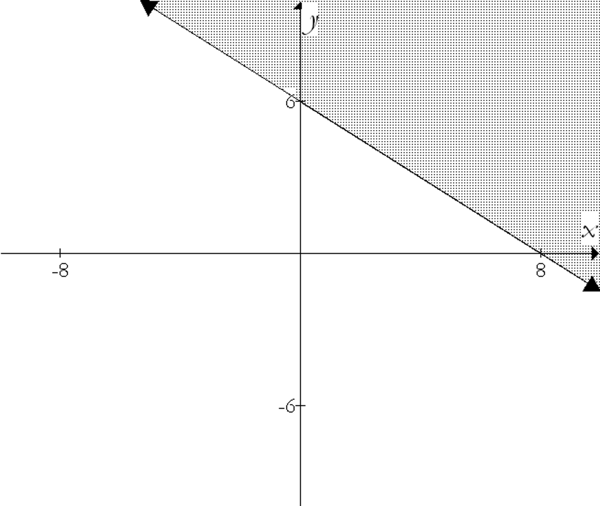
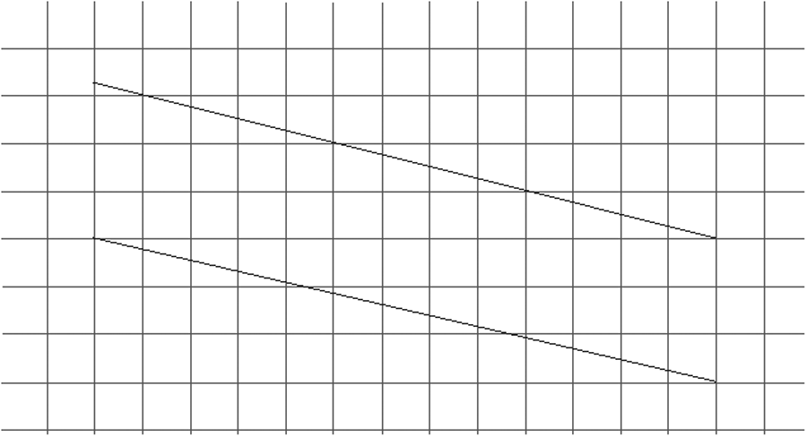
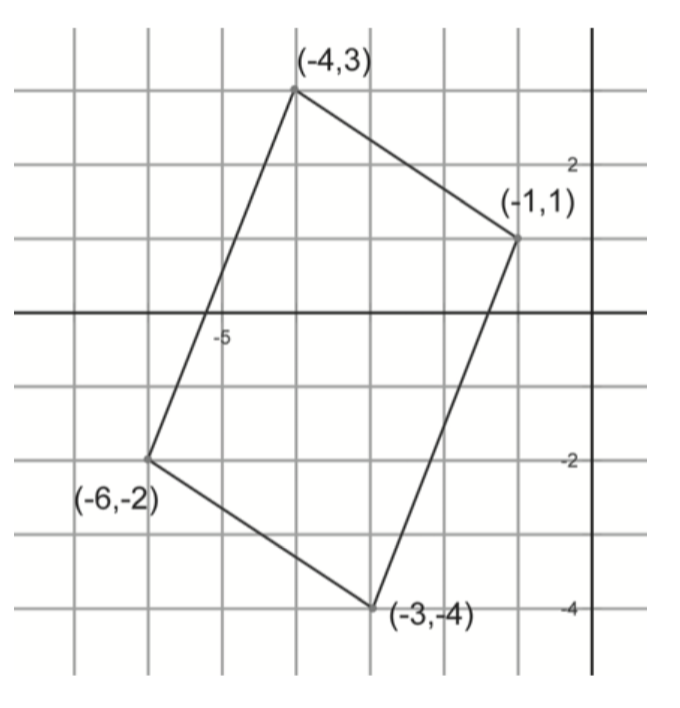
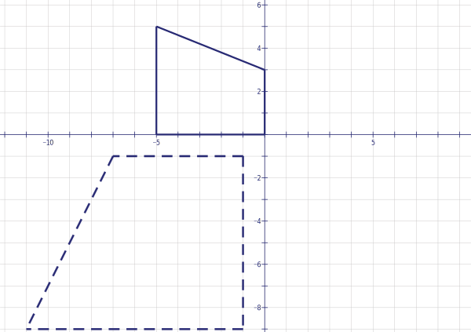
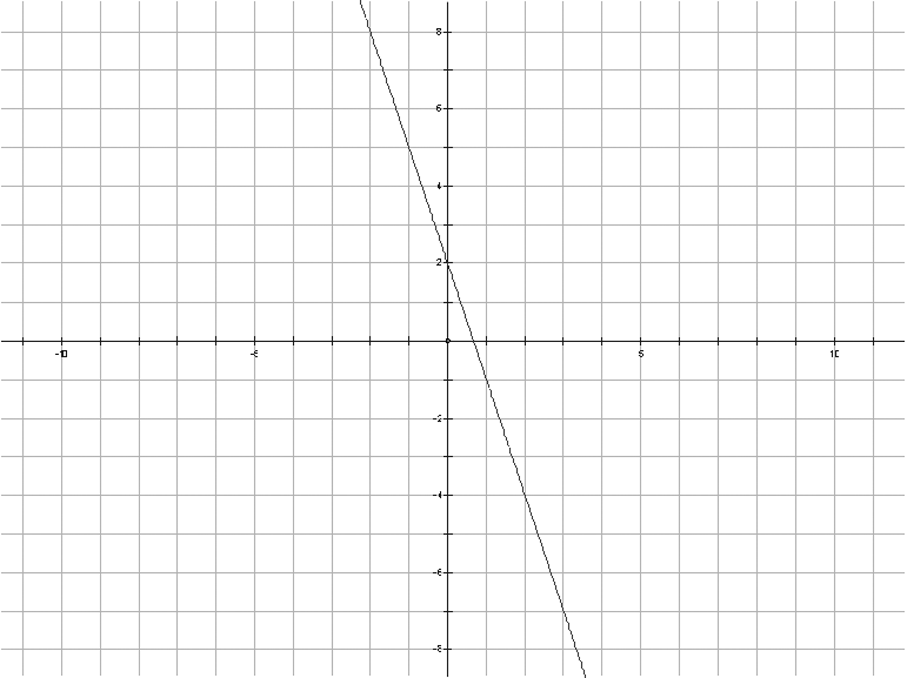
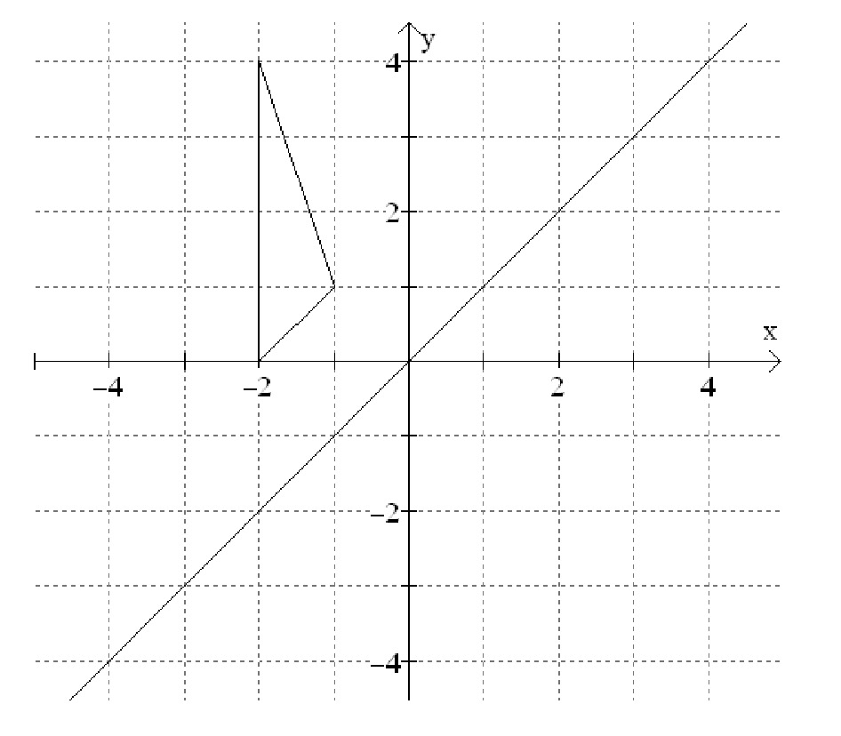
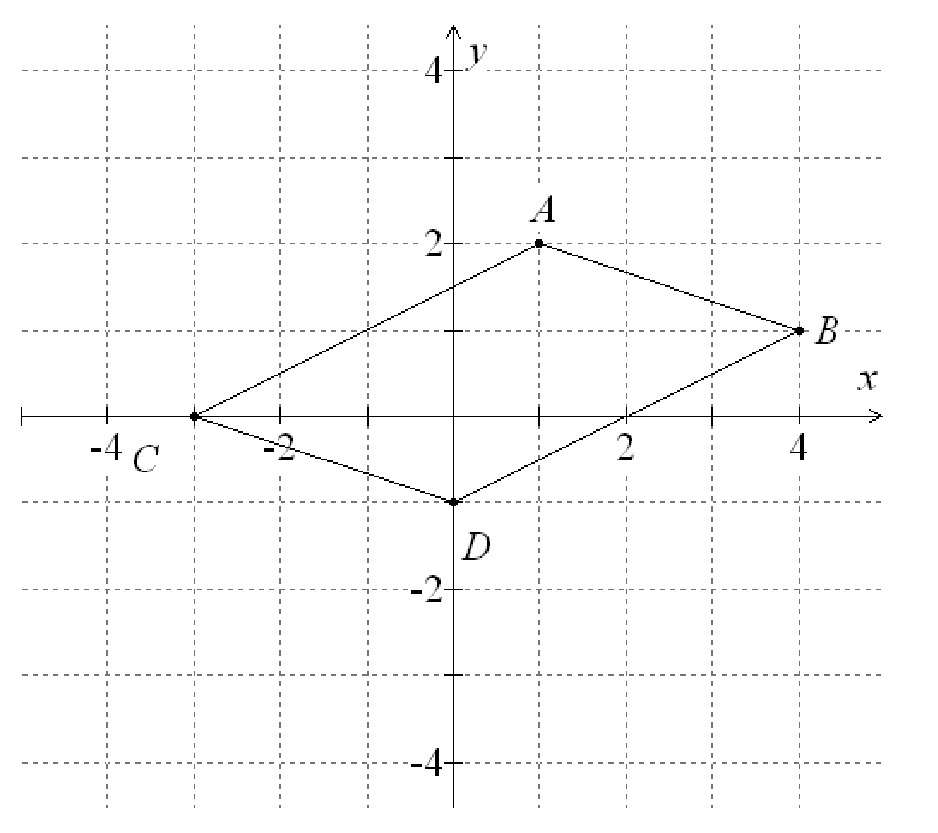

look for patternstinkerdescribevisualizerepresent symbolicallyprovecheck for plausibilitytake things apartconjecturechange or simplify the problemwork backwardsre-examine the problemchange representationscreate
look for patternstinkerdescribevisualizerepresent symbolicallyprovecheck for plausibilitytake things apartconjecturechange or simplify the problemwork backwardsre-examine the problemchange representationscreate
look for patternstinkerdescribevisualizerepresent symbolicallyprovecheck for plausibilitytake things apartconjecturechange or simplify the problemwork backwardsre-examine the problemchange representationscreate
look for patternstinkerdescribevisualizerepresent symbolicallyprovecheck for plausibilitytake things apartconjecturechange or simplify the problemwork backwardsre-examine the problemchange representationscreate
look for patternstinkerdescribevisualizerepresent symbolicallyprovecheck for plausibilitytake things apartconjecturechange or simplify the problemwork backwardsre-examine the problemchange representationscreate
look for patternstinkerdescribevisualizerepresent symbolicallyprovecheck for plausibilitytake things apartconjecturechange or simplify the problemwork backwardsre-examine the problemchange representationscreate
look for patternstinkerdescribevisualizerepresent symbolicallyprovecheck for plausibilitytake things apartconjecturechange or simplify the problemwork backwardsre-examine the problemchange representationscreate
look for patternstinkerdescribevisualizerepresent symbolicallyprovecheck for plausibilitytake things apartconjecturechange or simplify the problemwork backwardsre-examine the problemchange representationscreate
look for patternstinkerdescribevisualizerepresent symbolicallyprovecheck for plausibilitytake things apartconjecturechange or simplify the problemwork backwardsre-examine the problemchange representationscreate
look for patternstinkerdescribevisualizerepresent symbolicallyprovecheck for plausibilitytake things apartconjecturechange or simplify the problemwork backwardsre-examine the problemchange representationscreate
look for patternstinkerdescribevisualizerepresent symbolicallyprovecheck for plausibilitytake things apartconjecturechange or simplify the problemwork backwardsre-examine the problemchange representationscreate
look for patternstinkerdescribevisualizerepresent symbolicallyprovecheck for plausibilitytake things apartconjecturechange or simplify the problemwork backwardsre-examine the problemchange representationscreate
look for patternstinkerdescribevisualizerepresent symbolicallyprovecheck for plausibilitytake things apartconjecturechange or simplify the problemwork backwardsre-examine the problemchange representationscreate
look for patternstinkerdescribevisualizerepresent symbolicallyprovecheck for plausibilitytake things apartconjecturechange or simplify the problemwork backwardsre-examine the problemchange representationscreate
look for patternstinkerdescribevisualizerepresent symbolicallyprovecheck for plausibilitytake things apartconjecturechange or simplify the problemwork backwardsre-examine the problemchange representationscreate
look for patternstinkerdescribevisualizerepresent symbolicallyprovecheck for plausibilitytake things apartconjecturechange or simplify the problemwork backwardsre-examine the problemchange representationscreate
look for patternstinkerdescribevisualizerepresent symbolicallyprovecheck for plausibilitytake things apartconjecturechange or simplify the problemwork backwardsre-examine the problemchange representationscreate
look for patternstinkerdescribevisualizerepresent symbolicallyprovecheck for plausibilitytake things apartconjecturechange or simplify the problemwork backwardsre-examine the problemchange representationscreate
look for patternstinkerdescribevisualizerepresent symbolicallyprovecheck for plausibilitytake things apartconjecturechange or simplify the problemwork backwardsre-examine the problemchange representationscreate
look for patternstinkerdescribevisualizerepresent symbolicallyprovecheck for plausibilitytake things apartconjecturechange or simplify the problemwork backwardsre-examine the problemchange representationscreate
Habits
look for patternstinkerdescribevisualizerepresent symbolicallyprovecheck for plausibilitytake things apartconjecturechange or simplify the problemwork backwardsre-examine the problemchange representationscreate
look for patternstinkerdescribevisualizerepresent symbolicallyprovecheck for plausibilitytake things apartconjecturechange or simplify the problemwork backwardsre-examine the problemchange representationscreate
look for patternstinkerdescribevisualizerepresent symbolicallyprovecheck for plausibilitytake things apartconjecturechange or simplify the problemwork backwardsre-examine the problemchange representationscreate
look for patternstinkerdescribevisualizerepresent symbolicallyprovecheck for plausibilitytake things apartconjecturechange or simplify the problemwork backwardsre-examine the problemchange representationscreate
look for patternstinkerdescribevisualizerepresent symbolicallyprovecheck for plausibilitytake things apartconjecturechange or simplify the problemwork backwardsre-examine the problemchange representationscreate
look for patternstinkerdescribevisualizerepresent symbolicallyprovecheck for plausibilitytake things apartconjecturechange or simplify the problemwork backwardsre-examine the problemchange representationscreate
look for patternstinkerdescribevisualizerepresent symbolicallyprovecheck for plausibilitytake things apartconjecturechange or simplify the problemwork backwardsre-examine the problemchange representationscreate
look for patternstinkerdescribevisualizerepresent symbolicallyprovecheck for plausibilitytake things apartconjecturechange or simplify the problemwork backwardsre-examine the problemchange representationscreate
look for patternstinkerdescribevisualizerepresent symbolicallyprovecheck for plausibilitytake things apartconjecturechange or simplify the problemwork backwardsre-examine the problemchange representationscreate
look for patternstinkerdescribevisualizerepresent symbolicallyprovecheck for plausibilitytake things apartconjecturechange or simplify the problemwork backwardsre-examine the problemchange representationscreate
look for patternstinkerdescribevisualizerepresent symbolicallyprovecheck for plausibilitytake things apartconjecturechange or simplify the problemwork backwardsre-examine the problemchange representationscreate
look for patternstinkerdescribevisualizerepresent symbolicallyprovecheck for plausibilitytake things apartconjecturechange or simplify the problemwork backwardsre-examine the problemchange representationscreate
look for patternstinkerdescribevisualizerepresent symbolicallyprovecheck for plausibilitytake things apartconjecturechange or simplify the problemwork backwardsre-examine the problemchange representationscreate
look for patternstinkerdescribevisualizerepresent symbolicallyprovecheck for plausibilitytake things apartconjecturechange or simplify the problemwork backwardsre-examine the problemchange representationscreate
look for patternstinkerdescribevisualizerepresent symbolicallyprovecheck for plausibilitytake things apartconjecturechange or simplify the problemwork backwardsre-examine the problemchange representationscreate
look for patternstinkerdescribevisualizerepresent symbolicallyprovecheck for plausibilitytake things apartconjecturechange or simplify the problemwork backwardsre-examine the problemchange representationscreate
look for patternstinkerdescribevisualizerepresent symbolicallyprovecheck for plausibilitytake things apartconjecturechange or simplify the problemwork backwardsre-examine the problemchange representationscreate
look for patternstinkerdescribevisualizerepresent symbolicallyprovecheck for plausibilitytake things apartconjecturechange or simplify the problemwork backwardsre-examine the problemchange representationscreate
look for patternstinkerdescribevisualizerepresent symbolicallyprovecheck for plausibilitytake things apartconjecturechange or simplify the problemwork backwardsre-examine the problemchange representationscreate
look for patternstinkerdescribevisualizerepresent symbolicallyprovecheck for plausibilitytake things apartconjecturechange or simplify the problemwork backwardsre-examine the problemchange representationscreate
of Mind
look for patterns
to look for patterns amongst a set of numbers or figures
tinker
to play around with numbers, figures, or other mathematical expressions in order to learn something more about them or the situation; experiment
describe
to describe clearly a problem, a process, a series of steps to a solution; modulate the language (its complexity or formalness) depending on the audience
visualize
to draw, or represent in some fashion, a diagram in order to help understand a problem; to interpret or vary a given diagram
represent symbolically
to use algebra to solve problems efficiently and to have more confidence in one’s answer, and also so as to communicate solutions more persuasively, to acquire deeper understanding of problems, and to investigate the possibility of multiple solutions
prove
to desire that a statement be proved to you or by you; to engage in dialogue aimed at clarifying an argument; to establish a deductive proof; to use indirect reasoning or a counterexample as a way of constructing an argument
check for plausibility
to routinely check the reasonableness of any statement in a problem or its proposed solution, regardless of whether it seems true or false on initial impression; to be particularly skeptical of results that seem contradictory or implausible, whether the source be peer, teacher, evening news, book, newspaper, internet or some other; and to look at special and limiting cases to see if a formula or an argument makes sense in some easily examined specific situations
take things apart
to break a large or complex problem into smaller chunks or cases, achieve some understanding of these parts or cases, and rebuild the original problem; to focus on one part of a problem (or definition or concept) in order to understand the larger problem
conjecture
to generalize from specific examples; to extend or combine ideas in order to form new ones
change or simplify the problem
to change some variables or unknowns to numbers; to change the value of a constant to make the problem easier; change one of the conditions of the problem; to reduce or increase the number of conditions; to specialize the problem; make the problem more general
work backwards
to reverse a process as a way of trying to understand it or as a way of learning something new; to work a problem backwards as a way of solving
re-examine the problem
to look at a problem slowly and carefully, closely examining it and thinking about the meaning and implications of each term, phrase, number and piece of information given before trying to answer the question posed
change representations
to look at a problem from a different perspective by representing it using mathematical concepts that are not directly suggested by the problem; to invent an equivalent problem, about a seemingly different situation, to which the present problem can be reduced; to use a different field (mathematics or other) from the present problem’s field in order to learn more about its structure
create
to invent mathematics both for utilitarian purposes (such as in constructing an algorithm) and for fun (such as in a mathematical game); to posit a series of premises (axioms) and see what can be logically derived from them
look for patternstinkerdescribevisualizerepresent symbolicallyprovecheck for plausibilitytake things apartconjecturechange or simplify the problemwork backwardsre-examine the problemchange representationscreate
look for patternstinkerdescribevisualizerepresent symbolicallyprovecheck for plausibilitytake things apartconjecturechange or simplify the problemwork backwardsre-examine the problemchange representationscreate
look for patternstinkerdescribevisualizerepresent symbolicallyprovecheck for plausibilitytake things apartconjecturechange or simplify the problemwork backwardsre-examine the problemchange representationscreate
look for patternstinkerdescribevisualizerepresent symbolicallyprovecheck for plausibilitytake things apartconjecturechange or simplify the problemwork backwardsre-examine the problemchange representationscreate
look for patternstinkerdescribevisualizerepresent symbolicallyprovecheck for plausibilitytake things apartconjecturechange or simplify the problemwork backwardsre-examine the problemchange representationscreate
look for patternstinkerdescribevisualizerepresent symbolicallyprovecheck for plausibilitytake things apartconjecturechange or simplify the problemwork backwardsre-examine the problemchange representationscreate
look for patternstinkerdescribevisualizerepresent symbolicallyprovecheck for plausibilitytake things apartconjecturechange or simplify the problemwork backwardsre-examine the problemchange representationscreate
look for patternstinkerdescribevisualizerepresent symbolicallyprovecheck for plausibilitytake things apartconjecturechange or simplify the problemwork backwardsre-examine the problemchange representationscreate
look for patternstinkerdescribevisualizerepresent symbolicallyprovecheck for plausibilitytake things apartconjecturechange or simplify the problemwork backwardsre-examine the problemchange representationscreate
look for patternstinkerdescribevisualizerepresent symbolicallyprovecheck for plausibilitytake things apartconjecturechange or simplify the problemwork backwardsre-examine the problemchange representationscreate
look for patternstinkerdescribevisualizerepresent symbolicallyprovecheck for plausibilitytake things apartconjecturechange or simplify the problemwork backwardsre-examine the problemchange representationscreate
look for patternstinkerdescribevisualizerepresent symbolicallyprovecheck for plausibilitytake things apartconjecturechange or simplify the problemwork backwardsre-examine the problemchange representationscreate
look for patternstinkerdescribevisualizerepresent symbolicallyprovecheck for plausibilitytake things apartconjecturechange or simplify the problemwork backwardsre-examine the problemchange representationscreate
look for patternstinkerdescribevisualizerepresent symbolicallyprovecheck for plausibilitytake things apartconjecturechange or simplify the problemwork backwardsre-examine the problemchange representationscreate
look for patternstinkerdescribevisualizerepresent symbolicallyprovecheck for plausibilitytake things apartconjecturechange or simplify the problemwork backwardsre-examine the problemchange representationscreate
look for patternstinkerdescribevisualizerepresent symbolicallyprovecheck for plausibilitytake things apartconjecturechange or simplify the problemwork backwardsre-examine the problemchange representationscreate
look for patternstinkerdescribevisualizerepresent symbolicallyprovecheck for plausibilitytake things apartconjecturechange or simplify the problemwork backwardsre-examine the problemchange representationscreate
look for patternstinkerdescribevisualizerepresent symbolicallyprovecheck for plausibilitytake things apartconjecturechange or simplify the problemwork backwardsre-examine the problemchange representationscreate
look for patternstinkerdescribevisualizerepresent symbolicallyprovecheck for plausibilitytake things apartconjecturechange or simplify the problemwork backwardsre-examine the problemchange representationscreate
look for patternstinkerdescribevisualizerepresent symbolicallyprovecheck for plausibilitytake things apartconjecturechange or simplify the problemwork backwardsre-examine the problemchange representationscreate
Habits
look for patternstinkerdescribevisualizerepresent symbolicallyprovecheck for plausibilitytake things apartconjecturechange or simplify the problemwork backwardsre-examine the problemchange representationscreate
look for patternstinkerdescribevisualizerepresent symbolicallyprovecheck for plausibilitytake things apartconjecturechange or simplify the problemwork backwardsre-examine the problemchange representationscreate
look for patternstinkerdescribevisualizerepresent symbolicallyprovecheck for plausibilitytake things apartconjecturechange or simplify the problemwork backwardsre-examine the problemchange representationscreate
look for patternstinkerdescribevisualizerepresent symbolicallyprovecheck for plausibilitytake things apartconjecturechange or simplify the problemwork backwardsre-examine the problemchange representationscreate
look for patternstinkerdescribevisualizerepresent symbolicallyprovecheck for plausibilitytake things apartconjecturechange or simplify the problemwork backwardsre-examine the problemchange representationscreate
look for patternstinkerdescribevisualizerepresent symbolicallyprovecheck for plausibilitytake things apartconjecturechange or simplify the problemwork backwardsre-examine the problemchange representationscreate
look for patternstinkerdescribevisualizerepresent symbolicallyprovecheck for plausibilitytake things apartconjecturechange or simplify the problemwork backwardsre-examine the problemchange representationscreate
look for patternstinkerdescribevisualizerepresent symbolicallyprovecheck for plausibilitytake things apartconjecturechange or simplify the problemwork backwardsre-examine the problemchange representationscreate
look for patternstinkerdescribevisualizerepresent symbolicallyprovecheck for plausibilitytake things apartconjecturechange or simplify the problemwork backwardsre-examine the problemchange representationscreate
look for patternstinkerdescribevisualizerepresent symbolicallyprovecheck for plausibilitytake things apartconjecturechange or simplify the problemwork backwardsre-examine the problemchange representationscreate
look for patternstinkerdescribevisualizerepresent symbolicallyprovecheck for plausibilitytake things apartconjecturechange or simplify the problemwork backwardsre-examine the problemchange representationscreate
look for patternstinkerdescribevisualizerepresent symbolicallyprovecheck for plausibilitytake things apartconjecturechange or simplify the problemwork backwardsre-examine the problemchange representationscreate
look for patternstinkerdescribevisualizerepresent symbolicallyprovecheck for plausibilitytake things apartconjecturechange or simplify the problemwork backwardsre-examine the problemchange representationscreate
look for patternstinkerdescribevisualizerepresent symbolicallyprovecheck for plausibilitytake things apartconjecturechange or simplify the problemwork backwardsre-examine the problemchange representationscreate
look for patternstinkerdescribevisualizerepresent symbolicallyprovecheck for plausibilitytake things apartconjecturechange or simplify the problemwork backwardsre-examine the problemchange representationscreate
look for patternstinkerdescribevisualizerepresent symbolicallyprovecheck for plausibilitytake things apartconjecturechange or simplify the problemwork backwardsre-examine the problemchange representationscreate
look for patternstinkerdescribevisualizerepresent symbolicallyprovecheck for plausibilitytake things apartconjecturechange or simplify the problemwork backwardsre-examine the problemchange representationscreate
look for patternstinkerdescribevisualizerepresent symbolicallyprovecheck for plausibilitytake things apartconjecturechange or simplify the problemwork backwardsre-examine the problemchange representationscreate
look for patternstinkerdescribevisualizerepresent symbolicallyprovecheck for plausibilitytake things apartconjecturechange or simplify the problemwork backwardsre-examine the problemchange representationscreate
look for patternstinkerdescribevisualizerepresent symbolicallyprovecheck for plausibilitytake things apartconjecturechange or simplify the problemwork backwardsre-examine the problemchange representationscreate
of Mind
visualize
Why are manhole covers circular, instead of square?
You may have heard this “old chestnut” before. (If you have,
don’t spoil it for everyone else!) If you haven’t, you
may not have any idea how to even begin to think about
the problem. Since this is a question about shapes, it
may help to draw a picture. Better yet, you could build
a model of the situation using, say, a cylindrical oatmeal
box and a more rectangular box of cocoa powder. Now that
you have a model, play around with it. Look at it from
all different angles. Try placing the covers on the different
“manholes.” Do you notice anything?
There are many ways to visualize in
solving a problem. Sometimes visualizing can be as simple
as plotting several points on a graph and interpreting
what you see. Visualizing can also involve altering
or adding to a given picture to make the problem
easier.
How many square units are enclosed by the polygon DANCE
below?
You may have divided the figure in the previous problem into
triangles, or even “boxed it in” and found the area of
the rectangles you’d created. Either way, the way you reconceived
the diagram made it much easier to solve.
In the problems that follow, one of two strategies will help
you: 1) Draw or build a model of the situation to make
it easier to understand. 2) Alter an existing diagram in
some way to gain more information, or simply to help you
look at the diagram in a different way.
Below is the usual arrangement of 10 bowling pins, with
the “single pin” at the bottom. By moving only 3 of the
pins, can you “flip” the arrangement 180 degrees so that
the single pin is now at the top?
Alice and Bruno work in a city where the streets are laid
out in a grid pattern. City Hall is at (0,0). Alice and
Bruno work at (–3,–1) and (3,3) respectively. They wish
to find an apartment at a point C such that the sum of
the distances each of them has to walk to work is a minimum.
Of course, Alice and Bruno can’t walk “as the crow flies”
— there are buildings in the way. So what they really
mean when they talk about distance is the number of blocks
they’d have to walk if they always stay on the sidewalk.
At what place or places could point C be located to satisfy
their requirements?
A lattice point is defined as a
point with integer coordinates. If $(-3, 5)$ and $(2,
1)$ are two points on a line, find three other lattice
points on the same line.
Thomas is watching a train go by. In front of two train
cars, there are two train cars. Behind two train cars,
there are two train cars. And between two train cars,
there are exactly two train cars. What is the minimum
number of cars this train could have?
Below is a number line. You can show that 5+3=8 by starting
on the number 5, moving to the right three spaces, and
landing on the number 8.
Use the number line to show that $5-3=2$.
Use the number line to find $-4+(-5)$.
Use the number line to find $3-(-2)$.
Is it possible to fill a 10” cube with little drawers each
5” by 2.5” by 1”?
How many times might a square and a circle intersect? How
about a rectangle and a circle? A rectangle and a square?
There is a theorem in mathematics that states, “The sum
of any two sides of a triangle is greater than the third
side.” Why would anyone believe that “has to be”?
Lawrence and Erika find a treasure map that tells them
where precisely to begin in their search for booty, but
then unfortunately it lists 5 directions and says to
“follow them in whatever order will get you furthest
from your starting position”. Here are the directions:
10 Miles North
30 Miles East
$20\sqrt 2 $ Miles Northeast (that is, 45 degrees off
from
North and East)
$30\sqrt 2 $ Miles Northwest
$10\sqrt 2 $ Miles Southeast
What order should they take to get as far as possible from
their starting position?
You may already be familiar with Venn diagrams, which provide
a useful way to organize information. Use a Venn diagram
to solve the following problem:
Of 200 children attending a May Day celebration, 74 had
their face painted, 125 got a balloon, and 23 had their
face painted and got a balloon. How many children
did not get their face painted or receive a balloon?
Let’s try a more interesting one. The following data were
obtained about 400 people who attended the premiere of
“The Hair Witch Project”.
150 students bought popcorn.
250 students bought a soft drink.
200 students bought candy.
120 students bought popcorn and a
soft drink.
100 students bought popcorn and candy.
130 students bought a soft drink
and candy.
80 students bought popcorn, a soft
drink, and candy.
How many students did not buy any of the three items?
Let’s look at the exciting, dramatic adventures of a bobsledder.
A bobsledder starts a race by going 100 miles South.
He then goes 100 miles East, and then 100 miles North
to complete the race. Amazingly, the end of the race
is at the exact same place as the start of the race!
How is this possible?
Is the starting place you came up with in part a the
only possible correct answer? Explain why or why not.
You have an 8.5 by 11 inch piece of paper (standard size).
Fold the paper in half so the top edge and the bottom
edge meet, and then unfold it. Now you cut it along the
diagonal of the entire sheet of paper, and keep one of
the triangular pieces.
What’s the area of the piece of the triangle that’s above
the fold? What’s the area of the piece below the fold?
Suppose you have three bricks and a ruler, but no calculator.
Find a way to measure the longest diagonal of the brick—the
one that goes “inside” the brick to connect opposite
corners. (Since you have no calculator, you won’t be
able to use the Pythagorean Theorem.)
Now, suppose you stacked three bricks on top of each
other. Can you find a way to measure the longest diagonal
of the block this forms? (Still no calculator!)
It is easy to cut a cylindrical piece of cheese into 4
identical pieces with 2 straight cuts, and into 6 identical
pieces with 3 straight cuts. One day, Mr. Trump decides
to cut a cylindrical piece of cheese into 8 identical
pieces, and unsurprisingly, it takes him 4 cuts.
Rosie, his nemesis, claims she could have done it in only
3 cuts! Was she telling the truth, or is she just trying
to get Trump’s comb-over to stand on end?
Can you determine a way to divide a square into 7 smaller
squares that are not all the same size? How about 6 smaller
squares?
A power of two is a number like 4, which is $2^2$, or 64,
which is $2^6$, or any other number that can be written
in the form $2^n$. Can you find two powers of two that,
when you add them together, give an answer that is also
a power of two?
Five kids are playing “eeny-meeny-miney-moe.” They play
the game by going around a circle and pointing at each
kid in turn on each beat of the chant. The chant has
sixteen beats. The kid they point to on the last syllable
of the chant is “out.”
If kid #1 is the kid they point to first, which kid will
be out?
What about a game with fifteen syllables and four kids?
What about a game with twenty syllables and three kids?
What about a game with a hundred syllables and seven
kids?
In middle school, you probably learned how to represent
fractions as “pieces of pie.” Below are representations
of the fractions 1/3 and 2/5.
Draw “pieces of pie” to illustrate that $\frac{1}{3}
+ \frac{1}{3} = \frac{2}{3}$.
Draw “pieces of pie” to illustrate that $\frac{1}{2}
+ \frac{1}{4} = \frac{3}{4}$.
Draw “pieces of pie” to illustrate that $\frac{1}{2}
+ \frac{1}{3} = \frac{5}{6}$. (First think about how
you would represent “finding a common denominator.”)
A store manager wants to decide whether to break down boxes
measuring $3' \times 4' \times 4'$ or use them for shipping
ski equipment. Can a set of $6'$ skis fit into those
boxes? Why?
A circle of radius 1 rolls inside a circle of radius 2.
Describe the path traced by a piece of gum stuck to the
rim of the inner wheel. (Make a model!)
Shelly buys a new fishing rod and then prepares to take
the bus home. When she tries to get on the bus, the driver
says, “no way can you take that fishing rod on the bus
— it’s five feet long, and we don’t allow any objects
longer than four feet on this bus! Without the bus, Shelly
is stranded, so she goes back to the store to return
the rod. However, the clerk tells her that the rod is
nonreturnable. In a flash of insight, Shelly comes up
with a plan. She asks the clerk for a specific object,
which he gives her, and sure enough, she is allowed on
the next bus. Shelly’s plan didn’t involve breaking any
laws, and it didn’t involve changing the rod in any way,
certainly not by cutting or bending it, either! What
was her plan?
The cylinder below has a spiral drawn on it. The spiral
loops around the cylinder exactly four times.
You measure the cylinder and find that it is 10 inches
tall and 4 inches across. Then, to measure the length
of the spiral, you cut up along the left side of the
cylinder (imagine that it’s hollow, like the cardboard
from a roll of toilet paper). Draw what the spiral would
look like once you cut open the cylinder and flattened
it into a rectangle — you can try this with an actual
toilet paper roll or something similar.
How tall would the rectangle be?
How wide?
Use this information and your drawing to figure out the
total length of the spiral.
look for patternstinkerdescribevisualizerepresent symbolicallyprovecheck for plausibilitytake things apartconjecturechange or simplify the problemwork backwardsre-examine the problemchange representationscreate
look for patternstinkerdescribevisualizerepresent symbolicallyprovecheck for plausibilitytake things apartconjecturechange or simplify the problemwork backwardsre-examine the problemchange representationscreate
look for patternstinkerdescribevisualizerepresent symbolicallyprovecheck for plausibilitytake things apartconjecturechange or simplify the problemwork backwardsre-examine the problemchange representationscreate
look for patternstinkerdescribevisualizerepresent symbolicallyprovecheck for plausibilitytake things apartconjecturechange or simplify the problemwork backwardsre-examine the problemchange representationscreate
look for patternstinkerdescribevisualizerepresent symbolicallyprovecheck for plausibilitytake things apartconjecturechange or simplify the problemwork backwardsre-examine the problemchange representationscreate
look for patternstinkerdescribevisualizerepresent symbolicallyprovecheck for plausibilitytake things apartconjecturechange or simplify the problemwork backwardsre-examine the problemchange representationscreate
look for patternstinkerdescribevisualizerepresent symbolicallyprovecheck for plausibilitytake things apartconjecturechange or simplify the problemwork backwardsre-examine the problemchange representationscreate
look for patternstinkerdescribevisualizerepresent symbolicallyprovecheck for plausibilitytake things apartconjecturechange or simplify the problemwork backwardsre-examine the problemchange representationscreate
look for patternstinkerdescribevisualizerepresent symbolicallyprovecheck for plausibilitytake things apartconjecturechange or simplify the problemwork backwardsre-examine the problemchange representationscreate
look for patternstinkerdescribevisualizerepresent symbolicallyprovecheck for plausibilitytake things apartconjecturechange or simplify the problemwork backwardsre-examine the problemchange representationscreate
look for patternstinkerdescribevisualizerepresent symbolicallyprovecheck for plausibilitytake things apartconjecturechange or simplify the problemwork backwardsre-examine the problemchange representationscreate
look for patternstinkerdescribevisualizerepresent symbolicallyprovecheck for plausibilitytake things apartconjecturechange or simplify the problemwork backwardsre-examine the problemchange representationscreate
look for patternstinkerdescribevisualizerepresent symbolicallyprovecheck for plausibilitytake things apartconjecturechange or simplify the problemwork backwardsre-examine the problemchange representationscreate
look for patternstinkerdescribevisualizerepresent symbolicallyprovecheck for plausibilitytake things apartconjecturechange or simplify the problemwork backwardsre-examine the problemchange representationscreate
look for patternstinkerdescribevisualizerepresent symbolicallyprovecheck for plausibilitytake things apartconjecturechange or simplify the problemwork backwardsre-examine the problemchange representationscreate
look for patternstinkerdescribevisualizerepresent symbolicallyprovecheck for plausibilitytake things apartconjecturechange or simplify the problemwork backwardsre-examine the problemchange representationscreate
look for patternstinkerdescribevisualizerepresent symbolicallyprovecheck for plausibilitytake things apartconjecturechange or simplify the problemwork backwardsre-examine the problemchange representationscreate
look for patternstinkerdescribevisualizerepresent symbolicallyprovecheck for plausibilitytake things apartconjecturechange or simplify the problemwork backwardsre-examine the problemchange representationscreate
look for patternstinkerdescribevisualizerepresent symbolicallyprovecheck for plausibilitytake things apartconjecturechange or simplify the problemwork backwardsre-examine the problemchange representationscreate
look for patternstinkerdescribevisualizerepresent symbolicallyprovecheck for plausibilitytake things apartconjecturechange or simplify the problemwork backwardsre-examine the problemchange representationscreate
Habits
look for patternstinkerdescribevisualizerepresent symbolicallyprovecheck for plausibilitytake things apartconjecturechange or simplify the problemwork backwardsre-examine the problemchange representationscreate
look for patternstinkerdescribevisualizerepresent symbolicallyprovecheck for plausibilitytake things apartconjecturechange or simplify the problemwork backwardsre-examine the problemchange representationscreate
look for patternstinkerdescribevisualizerepresent symbolicallyprovecheck for plausibilitytake things apartconjecturechange or simplify the problemwork backwardsre-examine the problemchange representationscreate
look for patternstinkerdescribevisualizerepresent symbolicallyprovecheck for plausibilitytake things apartconjecturechange or simplify the problemwork backwardsre-examine the problemchange representationscreate
look for patternstinkerdescribevisualizerepresent symbolicallyprovecheck for plausibilitytake things apartconjecturechange or simplify the problemwork backwardsre-examine the problemchange representationscreate
look for patternstinkerdescribevisualizerepresent symbolicallyprovecheck for plausibilitytake things apartconjecturechange or simplify the problemwork backwardsre-examine the problemchange representationscreate
look for patternstinkerdescribevisualizerepresent symbolicallyprovecheck for plausibilitytake things apartconjecturechange or simplify the problemwork backwardsre-examine the problemchange representationscreate
look for patternstinkerdescribevisualizerepresent symbolicallyprovecheck for plausibilitytake things apartconjecturechange or simplify the problemwork backwardsre-examine the problemchange representationscreate
look for patternstinkerdescribevisualizerepresent symbolicallyprovecheck for plausibilitytake things apartconjecturechange or simplify the problemwork backwardsre-examine the problemchange representationscreate
look for patternstinkerdescribevisualizerepresent symbolicallyprovecheck for plausibilitytake things apartconjecturechange or simplify the problemwork backwardsre-examine the problemchange representationscreate
look for patternstinkerdescribevisualizerepresent symbolicallyprovecheck for plausibilitytake things apartconjecturechange or simplify the problemwork backwardsre-examine the problemchange representationscreate
look for patternstinkerdescribevisualizerepresent symbolicallyprovecheck for plausibilitytake things apartconjecturechange or simplify the problemwork backwardsre-examine the problemchange representationscreate
look for patternstinkerdescribevisualizerepresent symbolicallyprovecheck for plausibilitytake things apartconjecturechange or simplify the problemwork backwardsre-examine the problemchange representationscreate
look for patternstinkerdescribevisualizerepresent symbolicallyprovecheck for plausibilitytake things apartconjecturechange or simplify the problemwork backwardsre-examine the problemchange representationscreate
look for patternstinkerdescribevisualizerepresent symbolicallyprovecheck for plausibilitytake things apartconjecturechange or simplify the problemwork backwardsre-examine the problemchange representationscreate
look for patternstinkerdescribevisualizerepresent symbolicallyprovecheck for plausibilitytake things apartconjecturechange or simplify the problemwork backwardsre-examine the problemchange representationscreate
look for patternstinkerdescribevisualizerepresent symbolicallyprovecheck for plausibilitytake things apartconjecturechange or simplify the problemwork backwardsre-examine the problemchange representationscreate
look for patternstinkerdescribevisualizerepresent symbolicallyprovecheck for plausibilitytake things apartconjecturechange or simplify the problemwork backwardsre-examine the problemchange representationscreate
look for patternstinkerdescribevisualizerepresent symbolicallyprovecheck for plausibilitytake things apartconjecturechange or simplify the problemwork backwardsre-examine the problemchange representationscreate
look for patternstinkerdescribevisualizerepresent symbolicallyprovecheck for plausibilitytake things apartconjecturechange or simplify the problemwork backwardsre-examine the problemchange representationscreate
of Mind
represent symbolically
The diagram below shows a rectangle (not a square) that
has been cut into 9 squares, no two being the same size. The
smallest square is 3 cm by 3 cm. Find the sizes of the other
squares.
In trying to solve problem 1, some of you might have first
tried a little tinkering.
The diagram does suggest that a side of the second smallest
square might be somewhere between 6 and 9, and so you might
have tried some or all of the
integers 6 through 9. As it turns out, not only do none of
these integers work, but after trying any one of the numbers it
might not be at all clear to you
whether it would be too high or too low. So refining the
process to get at the answer might prove to be a bit
challenging.
On the other hand, some of you algebra lovers might have
bypassed that
wonderful play and jumped right into some symbolic
representation of the length of the side. If you haven’t
already done so, give algebra a try.
Representing the length of a side of the second smallest
square (or some other square) by $x$:
Work around the diagram, and find
an expression involving $x$ for the length of the left side
of the rectangle.
Find an expression involving $x$,
different from that in part a, for the length of the right
side of the rectangle.
By equating the expressions in
parts a and b, solve the resulting equation for $x$.
Now find the sizes of all the
squares.
Even though you might have been able to discover the answer
by tinkering, you might also agree that the algebra approach
was somewhat more efficient, despite the fact that it was
certainly not a walk in the park and required a great deal of
care and manipulation. Further, the algebra not only provided a
solution that you could be sure of, but also provides a way for
you to communicate your solution in a clear and convincing
manner.
Of course algebra is not a panacea. It is not the best
approach for all such problems, and even when it is the best
approach one still has to make decisions about which of the
unknown properties should be replaced by variables. And even
after you have made these decisions, you may realize that the
equation you have written requires very difficult algebra to
solve, so much so that you need to learn new skills to have any
hope of solving it.
In addition to its efficiency, security and its ability to
communicate succinctly and cogently, an algebraic approach can
provide you with a deeper understanding of the problem. In
problem 2, for example, you might have been able to discover
the relationship between the size of the smallest square and
the sizes of the other squares, allowing you to see the
solution for a starting square of any size. Using algebra can
also allow you to investigate the possibility of multiple
correct answers, something that a more tinkering approach is
less likely to reveal.
Take a look at another problem.
What happens when you take four consecutive numbers, add
them all up, add 10, and divide your answer by 4? Try it four
or five times to test your observation.
But can you be really sure that what you think happens in
problem 3 always happens no matter what four numbers your start
out with? You can of course produce a complicated verbal
argument but an algebraic argument would be far more
convincing.
Prove the result in problem 3.
The Climate Change Committee at Park (CCCP) is trying to
raise $\$10000$ to put towards restoring the eroding banks of
the stream. They happily announced that 25% of what they’ve
already collected is equal to $\tfrac{2}{3}$ of the amount still needed.
How much has the CCCP already collected?
Try this coin trick out on your friends. Get \$2.85 in
change, and keep it in your pocket. Now, find a friend who’s
got some change in her pocket. Have your friend hold the
change from her pocket. For effect, you can have her jingle
the change, and pretend you’re listening really carefully.
Then, tell your friend: “I can tell, just by listening, how
your amount of change compares to my amount. I think that I
have exactly what you have... plus fifty cents... and then
enough left over to make your change equal \$2.35.”
As long as you have more change than your friend, this trick
will ALWAYS work! Why?
Paul places 7 bags of marbles onto a table. The second bag
has 2 more marbles than the first bag. The third bag has 4
more marbles than the second bag. The fourth bag has 6 more
marbles than the third bag and so on. The total number of
marbles in all seven bags is 231. How many marbles are in
each of the bags?
Boxes and spheres: In the following diagram, there are two
kinds of items--boxes and spheres. Boxes all weigh the same,
and spheres all weigh the same.
If spheres weigh 2 pounds each, how
much do boxes weigh?
Now suppose the spheres don’t
necessarily weigh 2 pounds. Find a way to add boxes and
spheres to the right side scale below so that the scale will
balance. Your answer must be something other than “8 spheres
and 2 boxes.”
Abigail’s age is 12 years plus 2/3 of her age. How old is
she?
Betty has half the number of bedbugs as Buford, and four
times the number of bedbugs as Bernice. Among the three of
them, they have 2600 bedbugs. How many bedbugs does Betty
have?
Bristlecone pines are high-altitude trees famous for their
longevity. You learn that one pine started growing 2,436
years before a smaller pine growing on the other side of the
mountain. 50 years ago, the larger pine was exactly four
times older than the smaller pine. What are the ages of the
two pines?
(From braingle.com) A magical dragon has three heads and
three tails. The knight sent to slay the dragon has an
especially difficult task. If any one of the dragon’s heads
is chopped off, a new head grows. If a tail is chopped off,
two new tails grow. If the knight chops of two tails at once,
one new head grows. But if he chops off two heads at once,
nothing grows.
Any stroke of the knight’s sword will chop off either one or
two heads, or one or two tails. It will never chop off a
combination of heads and tails.
What is the smallest number of strokes required chop off all
heads and tails of the dragon, thus killing it?
Take any three consecutive integers and add them together.
If you repeat this
a few times you will notice something
interesting about the sum. What is it? Prove that this will
always be the case.
Imagine taking a number and adding its reciprocal. (Note:
Once you have a symbolic representation for this procedure,
using the graphing feature on your calculator could be very
useful in providing evidence for your answers below.)
Do you think there would be numbers
for which the answer would be 5? How many?
Do you think there would be numbers
for which the answer would be 2? How many?
Do you think there would be numbers
for which the answer would be 1? How many?
The Park School Ninth Grade class decided to sponsor a
fundraising trip to Owings Mills to see the spectacular mall.
They arranged for a 60-passenger bus costing \$360. If the bus
is filled, they will charge \$9 per person. If the bus is not
filled, for each empty seat, they will increase the price per
person by \$1. What is the maximum profit the club can make
from this fundraiser? (For this one you might want to graph
on your calculator as well.)
Last year three fifths of the mathematics society were
girls, but this year the number of boys doubled and six of
the girls dropped out. There are now twice as many boys in
the society as there are girls. How many members were in the
society last year?
In the figure below, a rectangle is divided into four
squares. The width (bottom side) of the rectangle is 35 cm.
Find the perimeter of the rectangle.
Find five consecutive integers whose sum is 2874.
How many numbers have the following property? When three
is added to the number and the sum squared, the result is the
same as when 9 is added to the square of the number?
Pick a number, add four, multiply by six, divide by three,
then subtract eight.
What always happens? Once you
figure it out, try this game on a parent or friend and see if
you can “read their mind” — guess their original number when
they tell you their final number.
Why does this trick work?
Make up your own trick like this,
and test it out on a parent or friend.
Ebay drove to school yesterday at 30 miles per hour and
returned home at 40 miles per hour. In order to find his
average speed for the entire trip, Ebay was busy with an
internet search for the distance from his home to Park, when
Paul happened along. “No need to do the search — the distance
does not matter.” Is Paul correct?
Find the diameter of a circle whose circumference is $Z$
cm and whose area is $Z\,\mathrm{cm}^2$. Is there more than one possible
answer?
This is a translation of the inscription on the tomb of
Diophantus, a Greek mathematician who is famous for studying
number theory. Can you figure out how old Diophantus was when
he died?
Here lies Diophantus,’ the wonder behold. Through art
algebraic, the stone tells how old:
God gave him his boyhood one-sixth of his
life, One twelfth more as youth while whiskers grew rife;
And then yet one-seventh ere marriage begun;
In five years there came a bouncing new son.
Alas, the dear child of master and sage, after attaining half
the measure of his father’s life chill fate took him. After
consoling his fate by the science of numbers for four years,
he ended his life.
Accept the dubious scientific fact that potatoes are 99%
water and 1% potatoey-stuff. You leave 100 pounds of potatoes
in the sun so that they dry out. After
a while, the potatoes have dried out enough so that they are
now 98% water. How much does the pile of potatoes weigh
now? Copyright cartalk.com
Zack runs a lawn mowing business. He’s hired eleven
employees to mow lawns for him, while he runs the office and
does marketing and hiring. In order to make money, Zack takes
a 10% cut of the money each employee earns. One day, the
employees realize that, while they only keep 90% of what they
earn, Zack gets a total of 110% of a typical employee’s
salary. They decide to strike unless Zack will agree to take
a smaller percent cut that will result in Zack’s earnings
being equal to everyone else’s. To appease his employees,
what percent cut should Zack now take from their
earnings?
A rectangle in the diagram below is divided into four
rectangles. The areas of three of the rectangles are shown.
What is the area of the fourth rectangle? (Think carefully
about which length you should represent by a variable.)
Roger has 6 times as many dimes as nickels and 3 times as
many pennies as nickels. If he has \$17, how many coins of
each kind does he have?
The Yaks club has 500 members. They’ve just announced a
charity fundraiser with the following ticket prices: old
members pay \$20, but new members get a special rate of \$14.
All of the new members decide to come, but only 70% of the
old members are coming. How much money will the Yaks make in
ticket sales?
Adapted from www.cartalk.com
The Yaks club decides to throw another charity fundraiser
— this time with the following ticket prices: old members
pay \$20, but new members get a special rate of \$13. All of
the old members decide to come, but only 71% of the new
members are coming. This time, how much money will the Yaks
make in ticket sales?
When Laila finally took her trigonometry test, her score
of 94% raised the average class score from 79 to 80. How many
students are in Laila’s math class?
The figure below is made of six squares.
AB is 6 cm. Find the area of the figure.
Lesson 1:
Linear Equations
Introduction
Your 8-year-old neighbor Joe has set up a lemonade stand.
To help him out you agree to buy a cup, but are surprised to
find that he charges for the cup as well as the lemonade. His
price is 30 cents for the cup itself, and then 80 cents per
cupful of lemonade.
How much would Joe charge for
someone who bought the cup and then drank 5 cupfuls?
Beth spends \$5.90 at the lemonade
stand. How much lemonade did she drink?
You realize that you have less than
a dollar’s worth of change, so you can’t buy a full cup. How
much do you think Joe should charge you for getting a cup
that’s half full of lemonade? (Remember you still need to pay
for the cup!)
How much should Joe charge for a
cup that’s 90% full?
Write an equation for $P$, the price
of your purchase, in terms of $L$, the amount of lemonade that
you buy, measured in cupfuls (which might not be a whole
number).
Linear equations are used to model the same kinds of
patterns that you see in arithmetic sequences — patterns where
the data show a steady rate of change. One benefit of a linear
equation is that you’re no longer restricted to whole numbers —
you can find the price of 3.42 cupfuls of lemonade — whereas
with a sequence, you could only have the price of 1 cup, the
price of 2 cups, the price of 3 cups, and so on.
When you graph a linear equation, one of the most critical
pieces of information you see on the graph is the slope of the
line. Recall that slope is a measure of the steepness of a
line, and is calculated by finding “rise over run” — for
example, the line below “rises” 6 units every time it “runs” 4
units, so its slope is 6 over 4, or 1.5.
Development
This lesson underscores the advantages of using multiple
points of view — looking at problems or situations from several
perspectives. Specifically we will see how shifting among
sequences, graphs and algebraic equations can make a difficult
problem quite accessible.
In an arithmetic sequence, ${T_1} = 10$, ${T_2} =
14$, ${T_3} = 18$, ${T_4} = $…
Graph the points of this arithmetic
sequence on a coordinate plane (use $x$ to stand for $n$, and $y$ to stand for ${T_n}$).
Draw the line that goes through the
points you drew.
What is the rate of change of the
sequence? In what way is this rate related to the line?
Write an equation of the line — an
equation showing the relationship between $x$ and $y$.
The points $\left( {a,30} \right)$ and $\left( {b,60} \right)$ are on the line. Use your
equation in part d to find $a$ and $b$.
Two terms of an arithmetic sequence are ${B_3} = 40$ and ${B_{10}} = 68$.
If you graphed the points of the
sequence, and then drew the line that goes through these two
points, what would be the slope of the line you drew?
The points $\left( {12,a} \right)$, $(100, b)$, and $\left( {c,89}
\right)$ are on the line described in part a. Find $a$, $b$, and $c$.
Write an equation for the line.
Test it by plugging in 3 and 10 for $x$ to make sure it
works.
A line contains the points (12,9) and (3,10). Draw the
line on a set of axes, then find:
The slope of the line.
An equation for the line.
The value of $x$ that will make $y$ equal 12.
The values of a sequence are represented by the equation
$y = 4x - 9$. (Here $x$ is playing the role of $n$, and $y$ is
playing the role of ${T_n}$).
Find the first term of the sequence
($x = 1$).
Find the rate of change of the
sequence.
What’s the value of the 7th term of
the sequence?
Which term of the sequence has a
value of 31? (If you got 115, re-read the question!) Figure
out a way to answer this question without writing out all the
terms of the sequence until you get 31.
Will the number 111 ever appear in
the sequence? If yes, when? If no, why not?
Will the number 173 ever appear in
the sequence? If yes, when? If no, why not?
A linear equation has the following graph:
Use the graph to estimate the value
of $y$ when $x$ is 4, and when $x$ is 10.
Estimate the slope of the line.
Estimate the value of $x$ for which $y$ would equal 100.
Do you think the point $(40,98)$ would be on
the line? How about $(50,158)$? Be precise in your explanation.
You have an aquarium with fish and snails in it. There’s a
limited amount of oxygen in the tank and so the two species
are in competition for the oxygen. The relationship between
$x$, the number of fish living in the aquarium, and $y$, the
number of snails living in the aquarium, is linear. The graph
of the line is below:
What’s the value of the $y$-intercept
of this line, and what does it mean in the context of the
problem situation?
(Recall that the $y$-intercept of the graph is the
point where the graph crosses the $y$-axis.)
What’s the value of the $x$-intercept
of this line, and what does it mean in the context of the
problem situation?
(Recall that the $x$-intercept of the graph is the
point where the graph crosses the $x$-axis.)
It is customary to describe the $x$-and $y$-intercepts using
only the $x$- or
$y$-coordinate. For example, a line with $y$-intercept (0, 16) is
said to have
a $y$-intercept of 16.
Practice
You write an important lab report, and want to have it
printed professionally. The print shop tells you that in
addition to paying a rate of 11 cents per page, you’ll also
have to pay 75 cents for the cover and binding.
If your lab report is 20 pages
long, how much will it cost to get it printed?
You change your writing to a
smaller font to make it cheaper – now the report is only 17
pages long. How much will it cost now?
You need to make the report even
shorter, because you want it to cost at most \$2.25. How short
does it need to be?
Write an equation to reflect the
information. Use $x$ to represent the number of pages, and use
$y$ to represent the price you pay.
A line has a $y$-intercept of 16 and a slope of -3.
Find:
An equation for the line.
The $x$-intercept of that line.
Find $d$: $\left( {12,d} \right)$ is
on the line.
Find $w$: $\left( {w,3} \right)$ is
on the line.
Looking at two lines, you see that the point $\left( {3,3}
\right)$ is on
both lines.
The $x$-intercept of the first line
is 12. Find its slope.
The slope of the second line is
$\tfrac{1}{4}$. Find its $x$-and
$y$-intercepts.
Problems
After considering the print shop from problem 8, you
decide that you’d rather have your report printed at a
different store. The new store has the same pricing system —
a charge for the covers and binding, and a charge per page —
but you forgot to ask about the specific rates.
You do remember being told that a
15-page report would cost \$1.78 to print, and a 19-page
report would cost \$1.98.
How much would a 21-page report
cost to print?
What is the rate they charge, per
page?
What would it cost to make an
“empty book” — just the covers,
no pages inside?
For \$50, what’s the longest report
you could print?
An arithmetic sequence has terms ${A_4} = 40$ and ${A_{14}} = 14$.
Write an equation for a line that
would contain these two points.
What’s the $x$-intercept of this
line? The $y$-intercept?
What’s the first negative term in
the sequence? Explain how your answer relates to part b.
On your line, for what value of $x$ will $y$ equal 1? For what value of $x$ will $y$ equal 20?
Find out whether there is a term
${A_n}$ of the sequence that equals each of the following
numbers: 30.4, 21.8, and 79.
You are driving on a road that travels up from a valley.
Your elevation (your height “above sea level”) increases
steadily over time — in other words, its rate of increase is
always the same.
40 minutes after you start driving, you are at an elevation
of 700 feet above sea level. After 10 more minutes, you are
735 feet above sea level.
What’s the rate of increase of your
elevation?
What was your elevation level when
you started driving?
Write an equation for $E$, your
elevation, in terms of $t$, the time you’ve been driving.
Use your equation to determine when
you’ll be at an elevation of 875 feet, and when you’ll be at
an elevation of 900 feet.
An internet café charges $\$15$ an hour for internet access,
and $\$9.50$ per pound for its famous chocolate-covered coffee
beans.
If you spent $H$ hours online and ate
3 pounds of beans, spending a total of $\$141$, what is $H$?
You spend $H$ hours online and eat $P$ pounds of the beans. In total, you spend $\$40$. Write an
equation about this situation to relate $H$ and $P$.
The symbols you worked with in the last chapter were
examples of mathematical functions. A function is something
that takes an input and somehow uses that to produce an
output. Consider the simple linear function ∆, which takes a
number $t$, multiplies it by 2, and adds the result to 7.
Write an equation for ∆.
(∆($t$)=…)
Sketch a graph of the outputs vs.
the inputs of the function ∆. You will first have to decide
how to label each axis, of course.
A line goes through $(2,20)$ and has slope 3502. It also
goes through the point $(1.5,a)$ and $(200,b)$. In your
head, determine reasonable estimates for $a$ and $b$.
If $y = \sqrt 2 \,x - \sqrt 2 $ and $x$ is an
integer,
can $y$ be an integer other than 0? If so, which one(s)? If
not, explain why not.
To make a perfect peanut butter and jelly sandwich, you
need to have exactly 1.2 ounces of peanut butter per ounce of
jelly you start with, then add an extra ounce of jelly.
If you use 3 ounces of jelly, how
much peanut butter should you use?
Now what if you use 3 ounces of
peanut butter — how much jelly do you need?
Do you always have more jelly than
peanut butter? If yes, why? If no, give an example of a
perfect PB&J sandwich that has more peanut
butter than jelly.
Write an equation showing the
relationship between $j$(amount of jelly) and $p$(amount of
peanut butter). Then graph this equation with $p$ on the
horizontal axis.
Which point on your graph
represents a sandwich with no peanut butter, just jelly?
Is there a point on your graph that
represents a sandwich with no jelly, just peanut butter? How
much peanut butter will you need then?
In each case find $k$ to make the statement true:
The point $\left( {3,9} \right)$ is
on the line $y = 2x + k$.
The point $\left( {3,9} \right)$ is
on the line $y = kx - 3$.
The slope of the line containing
$\left( {3,9} \right)$ and $\left( {k,49} \right)$ is
2.5.
The line containing $\left( {3,9}
\right)$ and $\left( {5,k} \right)$ has a $y$-intercept of
24.
You are comparing two printer companies, PrintCorp and
InkCorp, to print your next big report. PrintCorp charges
\$.80 for the cover and binding, and 8 cents per page.
InkCorp, who has a similar pricing system, tells you that \$10
will buy you a 223-page book, and \$20 will buy you a 473-page
book.
For each company, write an equation
for price $y$ in terms of number of pages $x$.
Graph both of these equations on
the same coordinate plane, with $x$ on the horizontal axis.
My report is $N$ pages long.
Coincidentally, it turns out that the price of an $N$-page
report is exactly the same, whether I print it at PrintCorp
or at InkCorp. What is $N$?
How does your answer to part c
appear in your graph? Explain.
Two values $x$ and $y$ depend on each other — the relationship
$3x - 2y = 10$ is always true.
What is the value of $y$ when $x = 4$?
What is the value of $x$ when $y = 4$?
What is the value of $y$ when $x = 0$?
Plot the above points on a set of
axes, with $x$ on the horizontal axis. Using your three points,
estimate what $y$ would be when $x$ is 8, then use the equation
to check your answer.
Do you think the relationship
between $x$ and $y$ is linear? Justify your response.
Graph the line $y = - 2x + 12$ without
using your calculator. Then:
Find a way to rewrite this equation
so that it’s in a similar form to the equation below:
$Ax+By=C$, where $A$, $B$, and $C$ stand for numbers.
What would be the values of $A$, $B$, and $C$?
If the equation $3 - 4x = 17y$ were
written in a form similar to that in part a, what would $A$, $B$, and $C$ be?
Jake has a rule, µ, but he’s not saying what it is.
However, when Mollie asked him what µ(4) was, Jake said, “57”
and when Seth asked him what µ(12) was, Jake replied, “17.”
Jake did confess to Mark that his rule followed a linear
pattern.
Find a formula for the function µ:
µ($x$)=_______________
For what values of $x$ will µ
output negative answers?
You are buying coffee beans — the minimum purchase at this
store is 20 ounces. The price is set such that you can buy
3.5 ounces of coffee for one dollar. You also have a coupon
for \$5 off your final price.
.Write an equation for $P$, the price
you pay, in terms of $C$, the amount of coffee you buy.
Graph the equation with $C$ on the
horizontal axis and $P$ on the vertical axis. Which values of
$C$ are relevant to this situation? Which aren’t?
What’s the slope of your line? What
are the units of the slope? Does it have a meaning that’s
relevant to the situation?
Find the $P$-intercept of your
equation. What does this number represent in the
situation?
You will find some of the next few problems easier to solve
if you can find a way to represent them visually.
One phone company charges a flat monthly rate of \$30 and a
per hour charge of \$1.25. A competing company charges a flat
monthly rate of \$45 and a per hour charge of \$0.75. Which
company would you choose?
Which of the following are linear equations — equations
whose graphs are lines — and why?
$y = {x^2}$
$x = 2y - 3$
$3x + 2y = 7$
A line has positive $x$- and $y$-intercepts. The $x$-intercept
is 3 times as big as the
$y$-intercept. Find the slope of this line.
When you graph some linear data, the points $\left( {5,11}
\right)$ and $\left( {11,21} \right)$ are on the graph. Will
the point $\left( {32,55} \right)$ also be on the graph? How
do you know?
A line contains the points $\left( {5,2} \right)$ and
$\left( {c,10} \right)$. If the slope of the line is 4, what
is c?
Back to problem 27. Find the slope of the line by taking
the equation of the line to be $y = a + bx$, and using algebra.
Which line is steeper: $y = 3x + 6$ or $x = \frac{1}{3}y -
2$?
We have two lines, $2x - 10y = 14$ and $6 − 5 y = −x$. Which line is
steeper?
Cecelia declares, “if I know a point on a line and I
double the $x$-coordinate, it will be easy to find the
$y$-coordinate that goes with it — just double the old
$y$-coordinate.
Is Cecelia right? Try her principle
with a few different lines.
Can you figure out for which kinds
of lines Cecelia’s method works?
Two variables are said to be “directly proportional” if
they have a constant, unchanging ratio. For example, if
$\frac{x}{y} = \frac{2}{3}$, then $x$ and $y$ are directly
proportional to each other.
Graph 4 solutions to $\frac{x}{y} =
\frac{2}{3}$.
If $2x - 3y = 1$, are $x$ and $y$ directly proportional?
If $2x - 3y = 0$, are $x$ and $y$ directly proportional?
You have to work 210 hours before you start earning money.
Then you earn $\$1$ for every 20 hours. Write an equation for
how much you earn, $E$, in terms of the number of hours you’ve
worked, $H$.
Consider the linear data below:
$x$
1
2
3
4
…
$y$
12
21
30
39
…
Write an equation for $y$ in terms of
$x$. Then graph the line.
Draw a second line that is above the
first line when $x = 2$, but below the first line when $x = 3$.
Then write an equation for the new line.
A line contains the points $\left( {8,5} \right)$ and
$\left( {c,c} \right)$.
If the slope is 2, what is $c$?
If the slope is 2, find the
equation of the line.
Write an equation for the slope in
terms of $c$.
Exploring in Depth
A line contains the point $\left( {1, - 8} \right)$. When
$x = 2$, $y$ is still negative. When $x = 3$,
y is now positive. Sketch a few pictures of possible lines.
Now answer the following questions.
To the nearest tenth, what’s the
smallest possible slope that the line could have?
To the nearest tenth, what’s
the
largest possible slope it could have?
There’s one point on the line $y = 10 - 2x$ where the
$y$-value is 4 times bigger than the $x$-value. Find this
point.
If 400 people come to a banquet, it takes 59 people to set
up.
If 722 people come to the banquet, it takes 87 people to set
up.
Assume the situation is linear and answer the following
questions:
If 500 people come, how many people
do you need to set up?
If 79 people set up, how many
people can come?
If 1 person comes, how many people
do you need to set up? (Remember that even if only 1 person
comes, they still need people to set up the decorations,
dessert table, etc.)
You buy your lunch at a salad bar, which charges a certain
price per ounce — including the weight of the bowl. When you
put 8.3 ounces of salad into the bowl, the price comes to
\$6.78. When you put 10.5 ounces of salad into the bowl, the
price is \$8.21.
What is the price charged per ounce
of salad?
What is the weight of the bowl, in
ounces?
Don’t use a calculator for this problem.
Find $2.\overline 3 -
\frac{4}{3}$
Solve for $x$: $\frac{1}{x} =
3$
Simplify: $- (1 + 2x)( - 2x)$
Factor $12{x^2} - 42x$
Expand ${(x + 1)^2}$
If you feed a turtle $W$ worms, he’ll crawl 15.5 inches.
If you feed him twice as many worms, he’ll crawl 40 inches.
Assume the situation is linear.
Make a table and fill it in
(some
entries will have $W$’s instead of
numbers).
How far will he crawl if you feed
him 3 times as many worms?
Explain.
If $W$ is equal to 7, how far will
he crawl for 8 worms?
If $W$ is equal to 7, how many
worms do you have to feed him for him to crawl 50 inches?
Show that if a line containing the point $\left(
{{x_1},{y_1}} \right)$ has slope $m$, then an equation of the
line is $y−y_1=m(x−x_1)$.
Lesson 2:
Solutions Of Linear Equations
Introduction
The business of solving equations can sometimes be a simple
matter, but at times can become quite complicated. It can
range from the relatively simple task of finding a value of $x$
that satisfies the equation $3 + x = 7$ to a problem that turns
out to be impossible, that of finding positive integers $a$,
$b$, and $c$ that satisfy the equation, ${a^3} + {b^3} = {c^3}$.
Then there are those equations that have so many solutions
that it would be
impossible to write them all out. What if someone challenged
you to find the two numbers they are thinking of and the only
clue you had was that the sum of the numbers is 100? You are
actually invited to solve the equation, $x + y = 100$; the
possibilities are endless.
Or what if you were faced with the task of writing out all
the solutions to the equation $x + 3 - 5 = 9x - 8x - 2$ or to
the inequality $3x + 6 < 8$?
By way of review, solve each of the following equations
and inequalities for the unknown letter. Remember to be
particularly careful with the inequalities. In particular,
when multiplying or dividing by a negative number, you always
have to reverse the inequality. Why must this be so?
To write all the solutions to the equation $3x + 7 = 22$ is
a pretty simple task, since $x$ can be replaced by only one
number to make the equation work, namely 5. Check it out.
The question of what values of $x$ and $y$ make the equation $2x
+ y = 13$ work is a slightly more complicated question, and it
is certainly no easy matter to find all the values of $x$ and $y$ that make the equation work.
Does $x = 3$, $y = 6$ work? How about $x = 7$, $y = - 1$?
What about $x = \tfrac{1}{4}$, $y = \tfrac{25}{2}$?
Justify your responses.
Find three more solutions to the equation.
What would be a systematic way of finding solutions? Use
your method to find two other solutions.
By the way, a neat way to write a solution like $x = 7$ and
$y = - 1$ is $(7,-1)$, with the $x$-value
written first, followed by the $y$-value. The expression
$(7,-1)$ is called an ordered pair. Any idea
why?
Can you list all the solutions to the equation $2x + y = 13$?
The answer is probably no, since there are simply too many, but
from your work in Lesson 1 you should know that there is a nice
way to show off a whole bunch of them very quickly.
Show that $(-1,15)$ and $(10,-7)$ are both solutions to the equation $2x + y =
13$, and graph these two points. Now graph at least ten
thousand solutions to the equation in less than ten
seconds.
How accurate is your graph in problem 5? For example,
suppose you wanted to determine whether the ordered
pair $(\tfrac{1}{4}, \tfrac{49}{4})$ is a solution to the equation $2x + y = 13$.
How much would you be willing to bet on the answer
you obtained from your graph?
Now let’s look at the inequality $2x + y > 13$. Can you
list all the solutions? If not, is there a nice way you can
show off a whole bunch of them very quickly?
For the inequality $2x + y > 13$:
Does the ordered pair $\left( {5,2}
\right)$ satisfy it? How about $\left( {7,1} \right)$?
List five ordered pairs that
satisfy it.
Find three ordered pairs $\left(
{x,y} \right)$ that satisfy it and are such that $2x + y$ is
as close to 13 as you can get.
Then find three ordered pairs
$\left( {x,y} \right)$ that do not satisfy it, but are such
that $2x + y$ is as close to 13 as you can get.
Now draw a picture of a few thousand solutions to the
inequality in problem 7.
You are used to graphing equations. The picture you drew in
problems 7 and 8 is called the graph of the inequality $2x + y
> 13$.
Practice
Find three different solutions to the equation $5x - 3y =
11$, including at least one integral solution (a solution
consisting only of integers).
Using the method of problems 7 and 8, graph solutions of
the inequality $5x - 3y < - 1$.
Graph solutions of the equation $x + 3y = 11$. Say
whether or not the point $\left( {2821, - 937} \right)$ is on
your graph.
Problems
The function $‡[x, y]$ is pretty weird:
it totally ignores $y$, and just takes $x$,
multiplies it by 5, and subtracts 4.
Graph all of the ordered pairs $(x,y)$ that satisfy $‡[x, y]=10$.
For each of the following, create an
equation in $x$ and $y$ that satisfies the
given information.
$(\tfrac{3}{2}, -\tfrac{1}{2})$ is a solution.
$\left( {3, - 1} \right)$ is a
solution.
Both $(\tfrac{3}{2}, -\tfrac{1}{2})$ and $\left( {3, - 1} \right)$ are solutions.
In what way(s) would a graph of $2x + y \geq 13$ be different from the
graph of $2x + y > 13$? (You might find your work in
problem 7 helpful here.)
Graph the solutions to the inequality $2x + y < 13$.
Problems that seem on the surface to be difficult can
sometimes be easily solved by drawing a
careful diagram. The next few problems underscore the value of
that visual aspect.
Try to find an ordered pair $\left( {x,y} \right)$ that
satisfies both of the equations $4x - 6y = 9$ and $-6x + 9y = -8$.
Find the ordered pairs $\left( {x,y} \right)$ that satisfy
both of the inequalities: $2x + 3y > 12$ and $x + y <
6$.
Do the following two equations have any solutions in
common? How many? If they have any solutions in common, find
them. Be sure to check your answer.
$$3x-y=-1$$$$x+5y=-3$$
Find the area of the region enclosed by the graph of the
following system of inequalities. $4x + 5y \le 20$, $2x -
y \ge - 4$, $y \ge 0$.
The dimensions of the bottom of a
rectangular box are 10 in by 15 in. Find
the height of the box if its total surface area is 525
in2.
How many points are on the line $y = 2x$ between
$(1,2)$ and $(2,4)$? How about between $(1,2)$ and
$(3,6)$? How about
between $(1,2)$ and $(1.01, 2.02)$?
What’s the largest integer $x$ that solves the inequality
$x < 5$?
What’s the largest rational number that solves it?
If $x < y$, is it possible to find values of
$x$ and $y$ such that $\frac{1}{x} > y$?
Jonathan claims that there is a certain ordered pair that
satisfies all the equations $x+3y=19$, $2x-5y=5$, $x-2y=4$.
Either prove or disprove Jonathan’s claim.
The Linear Game
In this game, the host, Eva, thinks up a
linear equation in two variables $x$ and $y$. She then invites a
contestant, say Lewis,
to come up with the equation using the following approach.
Lewis calls out
an $x$ or $y$ value and Eva tells him the
corresponding $y$ or $x$ value.
For example, suppose Eva is thinking of the equation $3x - y
= 11$ and Lewis says $x = 1$, then Eva says $y = - 8$, and
if Lewis says $y = 3$, Eva says $x = \tfrac{14}{3}$. This continues until Lewis is able to figure out what
Eva’s equation is.
How many tries does Lewis
absolutely need to get Eva’s equation?
Below is a summary of four of the
Eva-hosted games. In each case, guess Eva’s equation.
i.
Lewis
$x = 2$
$y = 3$
$y = 0$
Eva
$y = 1$
$x = -1$
$x = \tfrac{7}{2}$
ii.
Lewis
$y = 2$
$x = 3$
$y = 7$
Eva
$x = - 5$
impossible
$x = - 5$
iii.
Lewis
$y = 3$
$x = -1$
$y = -2$
Eva
$x = 2$
$y = 4$
$x = 17$
iv.
Lewis
$y = 2$
$y = 3$
$x = 0$
Eva
impossible
impossible
$y = 7$
It seems that there might be a more
efficient way than Lewis’s to find Eva’s equation. What would
be a good strategy?
Play the linear game with a
classmate.
The points $(1,5)$ and $(-2,11)$ satisfy the same
linear equation. Find another point that does.
Write an inequality for the shaded area below.

Thinking about the way you solve for $x$ in the equation $2x
+ 3x = 7$ might help you solve the following equations. Of
course your answer would involve constants other than
numbers. Try to solve each equation for $x$.
$ax + 3x = 7$
$2x + bx = 7$
$ax + bx = 7$
Ayana is thinking of a number. If she decreases it by 5
and then multiples
by 11, the result is the same as when she
decreases it by 3 and then multiples by 7. What number is
Ayana thinking of?
For each statement below, find what
number $c$ has to be to make it true.
The line $3x + y = c$, for
some
number $c$, has a graph containing
the point $\left( {7, -1} \right)$.
The graph of $cy - 2x = 1$ contains the point $(7,3)$.
The graph of $2y = cx + 9$ has an $x$-intercept
of 3.
The line $y = 3x + c$ contains
the point $(2,7)$.
Two points (not necessarily lattice points) with $x$- and
$y$-coordinates both between
0 and 10 inclusive are chosen. Find the
probability that $3x + 5y$ will be less
than 15.
Exploring in Depth
What do you think the graph of the
equation $x = 4$ would look like in
3-dimensional space?
What do you think the graph of the
equation $x + y = 4$ would look like in 3-dimensional
space?
I have $X$ pens and $Y$ CD’s that I want to sell. Pens sell
for \$1 and CD’s sell for \$6. Total, what I have is worth
\$71.
Would it be possible for me to have
300 pens? 30 pens? 35 pens?
Write one equation that expresses
the situation, and graph the equation.
I am $X$ years old and my younger brother is $Y$ years old. If
you add 3 to my age, you’d get the same answer as if you
doubled his age. Write this as an equation and graph the
equation. Then find two possible solutions for our ages.
The line whose equation is $ax + by = 3$ contains the
points $(5,1)$ and $(-9,-3)$. Find the values of $a$ and
$b$.
Draw a graph of the solutions of the equation ${x^2} +
{y^2} = 9$.
Draw a graph of the solutions of the
inequality $y \le {x^2}$.
Suppose $ax - {a^2} = bx - {b^2}$. For the
indicated values of $a$ and $b$, find the
value of $x$ that satisfies the equation,
and complete the chart below.
$a$
1
2
1
3
2
2
$b$
7
1
3
2
4
5
$x$
Again, suppose $ax - {a^2} = bx - {b^2}$:
Based on your results in problem
39, guess what $x$ would be when you solve the equation for $x$ in terms of $a$ and $b$.
Check to see that your guess in
part a works.
Two points (not necessarily lattice points) with $x$- and
$y$-coordinates both between
0 and 12 inclusive are chosen. Find the
probability that, while the $y$-coordinate
is less than twice the $x$-coordinate, the
sum of the $x$- and $y$-coordinates is greater than $9$.
Don’t use a calculator for this problem.
Add $3\frac{2}{3} + \frac{7}{6}$
In February, all the menu prices at
Danny’s diner increased by 10%. Then Danny got worried,
because with higher prices not as many customers came, so in
March he decreased all the prices by 10%. Are his customers
now paying less than, more than, or the same amount as they
were in January?
Factor ${x^2} - 81$
Solve for $x$: $\frac{1}{x} + 2 =
4$
What are the two possibilities
for
$x$ if $|x - 3| = 4$?
Lesson 3:
Geometry Of Lines
Introduction
How would you define parallel lines? How would you decide
if two lines were parallel?
Euclid, Ancient Greek geometer $extraordinaire$, defined
parallel lines as lines in a plane which never meet, even
when extended indefinitely. Line segments are parallel
if they lie on parallel lines.
It was hard for those Greeks to determine if lines were parallel
— after all, how could you show for sure that
lines never met? What if you thought that lines were parallel,
but actually they met at a point 100 miles away? This would
happen if lines were very close to being parallel, but
not quite.
Euclid’s parallel lines remain the same distance apart, no
matter where you take the measurements. (Think of train
tracks with crossbars of equal length.) That might give
a more practical way to tell if two lines are parallel
— measure their distance apart in two different places
and see if you get the same thing. But even that would
not be without its problems. Your measuring instruments
might not be accurate enough to tell if lines are just
skewed enough to meet 100 miles away.
To illustrate how difficult it can be to tell even if two
short line segments are parallel, look at the following
pair, below.
In fact, the line segments above were drawn so as NOT to
be parallel to one another. They are just slightly off.
In the 1600s, the French mathematician and philosopher Rene
Descartes changed the way people thought about — and did
— geometry. The story goes that he was lying in bed one
day, staring at the ceiling, and realized that he could
describe the position of a bug on his ceiling by counting
the number of ceiling cracks up and the number of ceiling
cracks over.
If you had two line segments on a $grid$, as below, and
knew the coordinates of a few points on each line, would
you now have a method to decide if they were parallel?

Descartes’s wonderful idea allowed someone to take a geometric
shape — a line — and describe its position exactly by overlaying
a grid — a coordinate system. Since these coordinates had
numbers attached, all of the sudden people were able to
apply much of what they already knew about algebra to geometry.
Descartes had allowed people to use multiple points of
view when considering geometry problems, switching freely
back and forth between an algebraic perspective and a geometric
perspective. And, when you thought about the previous problem,
so did you.
The rest is history.
Development
Say you live in a city where the streets are laid out in
a square grid pattern. You start at your house and walk
two blocks north, then three blocks east.
Draw a picture of this path on a piece of graph paper.
What’s the slope of the line segment connecting your
house and your ending point? How would you describe its
direction?
Your friend lives two blocks south of you. She starts at
her house, then follows the same pattern as you — two
blocks north and three blocks east.
Draw a picture of your friend’s path, on the same paper
as yours.
Is there a sense in which your path and your friend’s
paths are “parallel” (even though neither of you went
in a straight line)? Explain this.
Draw the points $\left( {1,2} \right)$ and $\left( {2,5}
\right)$. Draw the line through them — this is line $m$.
Line $n$ contains the point $\left( {3,1} \right)$ and
is parallel to line $m$. Draw line $n$. The point $\left(
{5,c} \right)$ is on line $n$. Find $c$.
What are the slopes of lines $m$ and $n$?
Discuss this question with a partner: Suppose that you
have two lines, one with slope 5 and another with slope
$\tfrac{11}{2}$. Will they have to meet somewhere? Try
drawing several pairs of lines with these slopes. What
keeps happening?
Based on your thinking in the previous problems, say what
must be true for two lines to be parallel.
What about lines that are perpendicular to each other — that
is, lines that cross at a 90 degree angle?
Can two lines, each with positive slope, be perpendicular?
How about two lines, each with a negative slope? Explain
with a picture.
Draw the line $y = 2x$.
Is $y = - 2x$ perpendicular to this line? How about $y
= \frac{1}{2}x$?
Take some guesses at the equation for a line that really
might be perpendicular to the line $y = 2x$. Check your
guesses by drawing this line on the same coordinate system.
We found that parallel lines have the same slopes. Do the
slopes of perpendicular lines also have some relationship?
Instead of trying to find a general rule right away, let’s
simplify the problem by making up an example.
Using graph paper, draw a line segment (not horizontal
or vertical), and use a measuring tool (a protractor?
the corner of a piece of paper?) to draw another line
segment perpendicular to the first. Then calculate the
slopes of the two segments you drew. What do you suppose
would be more helpful in looking for patterns — writing
the slopes in fraction or decimal form?
By creating other examples, or by looking at the results
of the examples your classmates made up, conjecture a
relationship between the slopes of perpendicular lines.
Try out your conjecture by using it to answer the following
questions. Suppose that lines $p$ and $q$ are perpendicular.
What’s the slope of line $p$ if line $q$ has slope $\frac{3}{5}$?
What’s the slope of line $p$ if the equation of line
$q$ is $y = \frac{1}{3}x + 1$?
What’s the slope of line $p$ if the equation of line
$q$ is $y = - 2x + 1$?
Check your answers to the previous problem by graphing
lines that fit the conditions of parts a, b, and c. Now
do you think your conjecture is true? If not, use this
new information to change your conjecture.
We’ve already found a way, using slope, to describe the direction
of your path through a city. We can also use information
about evenly-spaced city blocks to calculate your distance.
Starting at your house, you walk 2 miles west and 6 miles
north. How far away are you now from your house (measuring
distance along a straight path)?
Your house is at the point $\left( {1,5} \right)$. You
walk to the point $\left( {10,4} \right)$.
How far east or west did you go?
How far north or south did you go?
What’s your distance from your house?
Draw the points $\left( { - 2,3} \right)$ and $\left( {2,6}
\right)$. Find the distance between them.
Finally, you can calculate the position $halfway$ between
two locations in a city (or on a graph). This position
is called the midpoint. We can also
speak of the midpoint of a line segment connecting two
points. Soon, we’ll find a formula that tells you how to
find the midpoint of a segment joining $(x_1,y_1)$ and
$(x_2, y_2)$. But first let’s try some simpler problems.
What would be the midpoint of $\left( {1,5} \right)$ and
$\left( {6,10} \right)$? Create some other, simple problems
like this where you have to find the midpoint.
What would be the midpoint of $\left( {1,0} \right)$ and
$\left( {3,y} \right)$? Of $\left( {x,4} \right)$ and
$\left( {3,y} \right)$?
What’s the midpoint of $(x_1,y_1)$ and $(x_2,y_2)$?
Write in symbols what the $x$- and $y$-coordinates of
the midpoint would be.
Compare your answer with what other people got. If there
are different answers, see if you can do some algebra
to make them look the same.
Practice
What is the distance between
$(-2, -5)$ and $\left( {6,10} \right)$?
$(-2, -5)$ and $\left( { - 6, - 10} \right)$?
Lines $c$ and $d$ are perpendicular. What’s the slope of
line $c$, if…
line $d$ has slope $1\frac{1}{2}$?
line $d$ has slope $–.25$?
line $d$ has slope $.24$?
Two perpendicular lines intersect at the point $\left(
{1,2} \right)$. The first line also contains the point
$\left( {5,10} \right)$. Give the exact coordinates of
another point on the SECOND line.
Line $p$ goes through the points $C\left( {1,8} \right)$ and $D\left( {13, - 4} \right)$. Line $q$ goes through
the points $E\left( {-2, 6} \right)$ and $F\left( {10,
- 7} \right)$.
Make a sketch.
They sure look parallel. Are they?
How about angle CDF? Is it a right angle? Support your
answer with mathematical evidence.
Line $p$ goes through the points $\left( {2,4} \right)$ and $\left( {6, - 2} \right)$.
Find two points on line $p$ other than the given ones.
Find two points that would be on a line parallel to line
$p$.
Find two points that would be on a line perpendicular
to line $p$.
There are four lines $l$, $m$, $n$, and $p$ with slopes
$\frac{1}{3}$, $-1\frac{1}{2}$, $\frac{2}{3}$, and $-3$,
respectively. Are any of the lines parallel? Perpendicular?
The town of Metropolis is laid out as follows. The gridlines
are roads, but if you’re walking you can cut across the
blocks diagonally.
What’s the walking distance (how many “units”) from
The Post Office to School?
The Quick-E-Freeze to the Dairy Q?
The Quick-E-Freeze to the Hospital?
Which two buildings in Metropolis are the farthest apart,
measured by walking distance? How far apart are they?
You’re at school and want a cran-root-beer Squidgy. Measured
by walking distance, which is closer — the Dairy Q or
the Quick-E-Freeze?
Say that you’re driving now and can’t cut across the
city blocks. Which involves the shorter trip from the
school — the Dairy Q or the Quick-E-Freeze?
Here’s the design for the Varsity letter at Ziegelbawr
High.
The diagonal lines appear to be parallel. Are they?
What’s the perimeter of the letter?
A triangle has vertices at $\left( {1,3} \right)$, $\left(
{ - 3,14} \right)$, and $\left( {-1,-5} \right)$. Find
its perimeter.
Problems
Line $p$ passes through $\left( {0,0} \right)$ and $\left( {2,6} \right)$. It
is parallel to line $q$, which passes through $\left(
{6,1} \right)$ and $\left( { - 9,m} \right)$. Find $m$.
Prove that $\triangle ABC$ is a right triangle if
$A = \left( {11, - 18}\right)$, $B = \left( {9,3}\right)$,
and $C = \left( {-12, 1}\right)$.
You’ve found lots of distances over the course of this
lesson.
Find a formula for the distance between any two points
$\left( {{x_1},{y_1}} \right)$ and $\left( {{x_2},{y_2}}
\right)$. As a suggestion, you could make up some simpler
problems first.
If it isn’t this way already, write your formula in the
form “$d = ...$”
The formula you wrote in Problem 31 is sometimes called the
Distance Formula.
The line $y = 3x - 4$ contains the points $\left( { - 3,w}
\right)$ and $\left( {4,r} \right)$.
Find $w$ and $r$.
What is the distance between these two points?
Find the midpoint of the two points.
What’s the distance from the midpoint in part c to $\left(
{ - 3,w} \right)$?
You’ve probably noticed already that it can be extremely
helpful to draw pictures in solving these problems. For
instance, in the previous problem, you may have sketched
the line and the approximate location of the points before
solving for $w$ and $r$. While that wasn’t strictly necessary
to solve the problem, it helps you to get a handle on it.
For the next five problems, visualizing the situation by drawing a picture or adding things to
a picture will make it much easier to decide how to proceed.
Consider the point $\left( {0,2} \right)$. If that point
was on a line whose slope was 4, find:
The equation of that line.
The equation of another line through $\left( {0,2} \right)$,
perpendicular to the first line.
Two bugs start at the point $\left( {3,5} \right)$. One
travels down at a slope of $–2.5$, and the other takes
a path perpendicular to the path of the first ant. How
far apart are their $x$-intercepts?
A line’s $x$-intercept is –5. It has a positive $y$-intercept,
and the distance between the two intercepts is 12.5.
Find the $y$-intercept and the slope of the line.
Is a line with a slope of $\frac{10}{4}$ steeper or shallower
than a line with a slope of $\frac{5}{2}$? How does a
line with a slope of $2.5$ compare?
Say that a line makes an angle of 15 degrees with the $x$-axis.
If you draw another line that makes an angle twice as
big, 30 degrees, with the $x$-axis, will the slope of
the line double as well?
For most of the problems remaining in this lesson, you will
probably want to draw a picture. But even in most of the
problems above, there was work left to do after the picture
was drawn. The facts you now know about the slopes of parallel
and perpendicular lines give you tools to use algebra to
solve problems, as well. Sometimes this will be required,
as in the case where your drawing suggests that a line
passes through a certain point, but you’ll need to try
algebra in order to make certain that it wasn’t just close.
In the four problems that follow, don’t forget to draw
a picture first, but you will also find representing
relationships like slope and midpoint
symbolically to work to your advantage.
If the line through $\left( {8,c} \right)$ and $\left(
{6,4} \right)$ is parallel to the line through $\left(
{6,8} \right)$ and $\left( {12,18} \right)$, then what
must $c$ equal?
A triangle is formed by the lines $x = - 5$, $2y = x +
1$, and one other line. It has a right angle at the point
$(5,3)$. Find the other two vertices of the triangle.
The line containing the points $\left( {4,1} \right)$ and
$\left( {2,10} \right)$ is perpendicular to a line containing
the point $\left( { - 3,7} \right)$. Find where this
second line crosses the line $y = x$.
What value of $k$ will make the line containing points
$\left( {k,4} \right)$ and $\left( {2,1} \right)$ parallel
to the line containing $\left( {0,3} \right)$ and $\left(
{k,9} \right)$?
Don’t use a calculator for this problem.
Divide $\frac{5}{2}\div\frac{1}{2}$
Simplify $(-x)(5+x)(-3)$
Factor ${x^2} - 8x + 16$
Solve for $x$: $\frac{3}{x} + 1 = 7$
What are the possibilities for $x$ if $\left| {x - 3}
\right| < 4$?
Slopes can be represented as decimals as well as fractions.
Find three points with integer coordinates that the line
$y = 2.5x + 1$ goes through.
Find three points with integer coordinates that the line
$y = 1.1x + 3$ goes through.
Which two slopes in the list below represent lines that
are almost perpendicular? No Calculators!
$\frac{2951}{986}$
$\frac{{.25}}{{.76}}$
$\frac{{ - 7428}}{{22305}}$
$\frac{{ - 2,994,852}}{{5,987,134}}$
Line $p$ has a slope of $\frac{7}{5}$ and is parallel to
line $q$, which has a slope of $\frac{{119}}{a}$. Find
$a$.
In problem 27, you realized that the diagonal lines in
the Ziegelbawr High Letter (see below) are not quite
parallel. If they’re not parallel, then they must meet
somewhere. So where do they meet — above the “Z” or below?
How do you know?
The following pretty picture was made by connecting the
midpoints of adjacent sides of a square, then repeating
the process on the new quadrilateral formed, etc.
Is the second-biggest quadrilateral a square? (That is,
are its sides perpendicular and are they the same length?)
Are the sides of the third-biggest quadrilateral parallel
to the sides of the original square?
Will all the quadrilaterals you draw be square, even
the 100th one? How can you be sure?
You have a square dartboard with corners at (0,0), (0,20),
(20,0), and (20,20). Find equations for the boundaries
of a “target” shape to hit within the dartboard using
the following restrictions:
You may not use any vertical or horizontal lines, even
the edges of the dartboard. The probability of hitting
the target (assuming you’ll hit the dartboard) is 1/2.
You may not use any vertical or horizontal lines, even
the edges of the dartboard. The probability of
hitting the target (assuming you’ll hit the dartboard)
is 1/4.
Below is Metropolis again. You’re exactly halfway between
school and the post office. How far is the walking distance
to the Dairy Q?
You’re standing at the point $\left( { - 2,3} \right)$ on the grid on the Metropolis grid (see previous problem).
Gripped by the beautiful results you’ve discovered about
slope, you decide not to head for the Dairy Q but in
a direction perpendicular to the line between school
and the post office. This takes you close to the Dairy
Q but not quite.
Find an equation for the line that describes your new
path.
What are the intercepts of this line?
When you’re at the $x$-intercept, are you closer to school
or to the post office?
Is the result you found in part c just a coincidence?
For which points on this line would you be closer to
school? What is going on here?
Suppose you had a square that was 1 unit in length on each
side. What would the length of a diagonal be? Can you
find the length of the diagonal of the square whose sides
are of length $d$?
Do the points $\left( {0,0} \right)$, $\left( {3,4} \right)$,
and $\left( { - 1,1} \right)$ form an isosceles triangle?
That is, are any two sides of the triangle equal in length?
Which of the following are equal to each other?
$\frac{{d-b}}{{c - a}}$
$\frac{{b - d}}{{a-c}}$
$\frac{{d - b}}{{a - c}}$
$\frac{{b - d}}{{c - a}}$
The function Slope($c$) takes a line $c$ and outputs the
slope of line $c$.
.Find ${\rm{Slope}}(3x+7y=21)$.
Make up an equation for a line $d$ such that
${\rm{Slope}}(d) = \frac{1}{{{\rm{Slope}}}(3x + 7y = 21)}$.
Lines $e$ and $f$ are perpendicular. Find the
value of ${\rm{Slope}}(e) \cdot {\rm{Slope}}(f)$.
Find the equation of the line passing through $\left( {2,5}
\right)$ that is parallel to $y = 4x - 6$.
The slope of the line $2x + 5y = 10$ added to the slope
of the line $kx + 8y = 23$ is zero. Find $k$.
Exploring in Depth
Find the area of the triangle in Problem 30.
Starting at the point $\left( {3,4} \right)$, you run in
a straight line to the point $\left( {5,2.5} \right)$, running a 10-minute mile.
(A mile is a unit on the plane). Then, you run in a straight
line to the point $\left( {x,0} \right)$, running an
8-minute mile. The total time you ran is 1 hour and 15
minutes. Find $x$.
A point’s $y$-coordinate is 2 more than its $x$-coordinate.
The slope of the line from the origin to the point is
1.125. Find the coordinates of the point.
The midpoint of points $A$ and $B$ is $\left( { - 20,6.5} \right)$.
The coordinates of point $A$ are $\left( { - 85,52} \right)$.
What must be the coordinates of $B$?
The point $\left( {x,0} \right)$ is equidistant to — equally
far from — $\left( { - 1,0} \right)$ and $\left( {5,1}
\right)$. Solve for $x$.
Why do you think the definition of slope is as defined
— “change in $y$ over change in $x$ ” — and not vice versa,
“change in $x$ over change in $y$”?
The point $\left( {7,4} \right)$ below represents your
location, and the line represents a river. (The scale
on this graph is 1.)
Write an equation for the river’s line.
Draw a path that you would walk to get as quickly as possible
to the river. What is the slope of this path? What is an
equation for this path?
Use your calculator to see the coordinates of the point
where you would reach the river. Then find your distance
from the river.
Describe a general strategy for finding the distance from
a point to a line.
Metropolis, again! In Problem 50, you found an equation
for your path starting from $\left( { - 2,3} \right)$ and perpendicular to the line containing the school and
post office. With luck, you found it to be $y = \frac{3}{2}x + 6$. At what point on this
line are you closest to the Dairy Q?
Can you find a formula, like the midpoint formula, that
gives the coordinates of a point one-third of the way
of the distance between two points? Be sure to test your
formula on some specific points.
Remember that another way of determining if two lines are
perpendicular is if their slopes multiply to -1.
Are lines with a slope of .111… (the 1’s go on forever
— this number can also be written as $.\overline {111}
$) and a slope of -9 exactly perpendicular?
What slope is perpendicular to a line with slope $1/9$?
Now determine the decimal equivalent of $1/9$.
Are your answers to the previous questions consistent?
Lesson 4:
Coordinate Geometry
Introduction
In the previous lesson, you learned about parallel and
perpendicular lines. A pair of lines that are parallel never
meet; other pairs of lines that you can draw on paper
eventually will. You also learned that you can tell if lines
are parallel by checking their slopes.
The lines below aren’t on a coordinate system, so you won’t be
able to check their slopes. However, to prove that they are not
parallel, you could extend them to a point where they meet.
Place an extra piece of paper next to the picture above.
Then, using a straightedge, pick two non-parallel lines and
extend them until they finally meet. How far away from the edge
of the picture did they meet?
Development
Will the real square please stand up? One of these figures
is a square. The other is an impostor.
Find a way to determine which one is the square. Keep in
mind that measuring with a ruler will not be accurate
enough.
Here’s another figure which really is a square:
Or is it? As you have seen, it can be hard to tell.
What would you have to check to $prove$ that this is
indeed a square? Do so.
In the previous problem, it wasn’t enough just to show
that all the sides were the same length. Can you draw some
four-sided figures, other than squares, where the sides are
all the same length? Do you remember what such figures are
called?
Similarly, it wasn’t enough to show that all of the angles
were 90 degrees. Draw some four-sided figures other than
squares with four 90-degree angles. What are they called?
Appearances can be deceiving. When confronted with a
diagram, you should never assume what is not explicitly stated.
You can’t be sure that you really have parallel lines, segments
of the same length, etc. That is, you can’t be sure unless you
prove it!
For example, a square is defined as a quadrilateral with
four equal sides and four 90-degree angles. So to prove that
something is a square, you need to: 1) Check that it has four
sides, 2) Show that the sides have the same length (using the
distance formula, for example), and 3) Show that all angles are
90 degrees (by comparing slopes, for example).
To prove that something is not a square, you only need to
show that it fails on at least one of the counts above. So, for
example, if you used the distance formula to show that two
sides of a figure were of two different lengths, you would have
already proved that it is not a square — no need to check the
other criteria.
Use the definition of a square to do the following:
Prove that the four-sided shape
with vertices on $\left( {3,0} \right)$, $\left( {7,3}
\right)$, $\left( {4,7} \right)$, and $\left( {0,4}
\right)$ is a square.
Make up your own square, then
construct an argument to prove to someone else that it is a
square.
How would you define a rectangle?
Here are the supposed corners of a rectangle: $\left( { -
32,52} \right)$, $\left( {74,138} \right)$, $\left( {117,85} \right)$,
$\left( {11,-1} \right)$. Is it really a rectangle?
Prove it.
Here is a picture of the rectangle from problem 7 with the
diagonals drawn in. Do they look the same length to you?
Either prove that they are the same length, or show that they
are not.
Prove that the line segment drawn from $\left( { - 10,28}
\right)$ to $(4,4)$ has the same midpoint as the line
segment drawn from $\left( {-7,-4} \right)$ to $\left( {1,36} \right)$.
In middle school, you learned about parallelograms,
rhombuses, and trapezoids. Come up with a definition for
each.
Practice
In the following set of questions, you should either PROVE
that the shape is what you think it is or give mathematical
evidence to show that it is not. It may help you to start by
drawing a diagram.
Are $\left( {10,2} \right)$, $\left( {12,42} \right)$,
$\left( { - 28,44} \right)$, and $\left( {-30, 4} \right)$ the corners of a
square?
In the figure below, is ABCD a rectangle?
In the figure below, is ABCD a square?
In the figure below, is CDE isosceles?
Are $\left( {-3,-1} \right)$, $\left( {14,12} \right)$, $\left( {18,20} \right)$, and $\left( {1,14} \right)$ the corners of a
parallelogram?
Do some calculations to prove what, in fact, each of the
following shapes is. Make sure you’ve shown the shape
satisfies each part of the appropriate definition in Problem
10.

Going Further
Could we prove that the diagonals of $any$ rectangle are the
same length as each other? One thing we could do would be to
try another example. Let’s take another rectangle of a
different size, say the one defined by $\left( {3,4} \right)$,
$\left( {9,7} \right)$, $\left( {8,9} \right)$, and $\left(
{2,6} \right)$. Using the distance formula, we find that the
lengths of the diagonals are $\sqrt {{{(9 - 2)}^2} + {{(7 -
6)}^2}} $ and $\sqrt {{{(8 - 3)}^2} + {{(9 - 4)}^2}} $,
which both simplify to $\sqrt {50} $.
Are we better off than we were before? Now we know that our
conjecture is true for two rectangles, but that still leaves
lots of other rectangles we’re not sure about. Another strategy
might be to draw a rectangle that could represent any
rectangle. To make life easiest, let’s position it so that its
bottom edge lines up with the $x$-axis, with its left side
touching the origin.
We don’t want to say how long the sides are, because then
we’d have a specific rectangle. So let’s just call the lengths
$a$ and $b$.
Notice that the coordinates of the point in the rectangle’s
upper right corner have been left blank. We could be lazy and
fill them in with two more letters: $\left( {c,d} \right)$.
But there is a way to do it in terms of the other letters that
are already in the diagram.
Read the previous paragraph (if you haven’t already) and
find a better way to name the coordinates of the point in the
upper right corner.
Now use the distance formula to find the length of each
diagonal of this rectangle. Note that your answers will have
letters in them that won’t go away! How do your answers
compare? What did you just prove?
Using symbols to represent numbers or coordinates that could
take on any values is another example of representing
symbolically. In addition to allowing us to do the proof,
representing the coordinates symbolically has a side benefit
here: any calculations we do using these symbols will apply to
any rectangle we could possibly come across.
Use the formula you found in Problem 18 to find the
lengths of the two diagonals of a 17x42 rectangle. Does your
formula work?
Socrates read your work in Problem 18, and complained that
you’ve really only shown that the diagonals are congruent for
rectangles that have a corner at $\left( {0,0} \right)$ and
are sitting flat on the $x$-axis. Is he right? Do you have a
response?
Draw a square that can represent any square, placing it on
a grid and labeling the coordinates of its important points
with letters (as you did in Problem 17). You may want to make
one of its corners the origin. Now calculate the length of
the diagonals of your square.
Draw an isosceles triangle that can represent any
isosceles triangle.
Find two different sensible ways to
place your triangle on a coordinate plane. Label the coordinates using a minimum number of
letters, as in Problem 17.
Find the coordinates of the
midpoint of each of the same-length sides. Now connect each
midpoint with the vertex opposite it, as below. Are these two
line segments the same length? Prove it for any isosceles
triangle.
Part b of the previous problem is a proof of a theorem.
State the theorem you proved.
Now rotate your isosceles triangle of Problem 22 so that
the base side (the side that is a different length from the
other two sides) is vertical. Does your proof apply to
triangles like these, as well?
You’ve now had a bit of practice doing proofs that aren’t
just about specific diagrams. For example, you proved that the
diagonals in ANY rectangle are the same length.
Of course, some statements you’ll investigate in geometry
may turn out to be false. When you’re asked to prove something,
it’s a good idea to figure out if it’s worth it to even begin
the proof — maybe the statement wasn’t true to begin with.
Draw some pictures to decide if it is worth it to prove
the statement “the diagonals of a parallelogram are the same
length.”
If you can draw a picture that shows a statement must be
false, that picture is called a counterexample.
Practice
Draw a parallelogram that can represent any parallelogram,
placing it on a grid and labeling its coordinates with
letters (as in Problem 17).
Draw an equilateral triangle that can represent any
equilateral triangle, labeling the important points as
always.
In the previous question, you probably had to use two
different letters to label the points. Now find a way to get
it down to one letter.
According to your definitions,
Is a square a type of
rectangle?
Is an equilateral triangle a type
of isosceles triangle?
Is a rhombus a type of
parallelogram?
Is a rectangle a type of
square?
Is a parallelogram a type of
trapezoid?
For a rectangular box with width 4, length 5, and height
6,
What is the exact (i.e. no
rounding) length of the diagonal of the base?
What is the exact length of the
diagonal that connects
opposite corners of the box?
A kite is a quadrilateral that has two pairs of congruent,
adjacent sides, as
pictured below.
Carefully explain why most parallelograms do $not$ fit the
definition of a kite.
Is a rhombus a type of kite?
Problems
Whenever you test a statement in geometry to see if it’s
true, you should visualize by
drawing several, varied pictures of the shape you’re investigating.
If you can’t find a counterexample and the statement appears
to be true, it’s time to look for a proof. But it is never
good enough to prove something by doing the calculations
on a specific shape you drew. You’ll have to represent
the coordinates symbolically by
using letters that can stand for any number. That way,
you’ll be sure your proof works for all shapes. Practice
using both of these strategies in the five problems that
follow.
Do the non-parallel sides of a trapezoid have to be
congruent? Either prove it, or find a counterexample.
Prove that in any triangle the line segment joining the
midpoints of any two sides is parallel to the third side.
Prove that in any triangle the length of the line segment
joining the midpoints of any two sides is equal to half the
length of the third side.
Is it the case that the line segments
joining the midpoints of successive sides of a rectangle form
a rhombus? Prove it
or find a counterexample.
$FAN$ is a right triangle with the right angle at $A$. A
line segment is drawn from $A$ to the midpoint $Y$ of
$\overline {FN}$. Is the conjecture that $AY = FY$ true? Justify
your answer. (Choose your coordinates carefully.)
Recall that a median of a triangle is a line drawn from the
vertex to the midpoint of the opposite side.
$A\left( { - 3,13} \right)$, $B\left( {9,1} \right)$ and $C\left( { - 9,1} \right)$ are
the vertices of a triangle.
Draw the triangle and its medians
$\overline {AD} $, $\overline {BE} $ and $\overline
{CF} $ on graph paper.
Find the equations of the three
medians.
It appears that the three medians
all cross at the point $\left( { - 1,5} \right)$. Is
this
really true, or are they just close?
What theorem does Problem 38 suggest about the medians of
any triangle?
A lattice point is a point where both
coordinates are integers, like $(-7,2)$, but
not like $(3,5.5)$. Is it possible to form a square whose area
is 72 by connecting
four lattice points? How about if the sides of the square
cannot be horizontal or vertical?
Let $a$ be any number. Is the quadrilateral with vertices
$(a,7a),\;(6a,5a),\;(2a, - 7a)$, and $( - 4a, - 5a)$ sometimes, always, or never a rectangle, depending on the
value of $a$?
Don’t use a calculator for this problem.
Subtract $7\frac{1}{4} - 3\frac{3}{5}$
Factor ${x^2} - 3x - 54$
Solve for $x$: $\frac{1}{{x + 2}}
= 4$
Are the following expressions
“negative reciprocals”? $\frac{-6x^2}{-4x}$ vs. $\frac{2}{{3x}}$
Find all values of $x$ where $- x
= |x|$.
Is it possible for a line to go through no lattice points?
Exactly one lattice point? Exactly two lattice points?
Can both the length and width of a
rectangle be irrational and yet the length of its diagonal be
an integer?
It’s one thing to prove something that someone else asks you
to. But it is often more fun (and what mathematicians actually
do) to prove something you thought of yourself. When you come
up with a statement you think is true, though you don’t know
for sure, that’s called a conjecture.
As always, visualizing
remains of the utmost importance when coming up with
conjectures.
For what kinds of quadrilaterals do the diagonals cut each
other exactly in half? Consider squares, rectangles,
rhombuses, parallelograms, kites, and trapezoids. Choose one
shape for which this is true and write a proof.
For what kinds of quadrilaterals are the diagonals
congruent? Consider rhombuses, parallelograms, kites, and
trapezoids (since you’ve already considered squares and
rectangles). Choose one shape for which this is true and
write a proof.
For what kinds of quadrilaterals are the diagonals
perpendicular to each other?
On a sheet of graph paper use a straightedge to draw any
quadrilateral — the uglier the better. Now, as accurately as
you can, find the midpoint of each of the sides and connect
those midpoints in order with line segments.
What appears to be true about the
new quadrilateral you have drawn?
Have a conversation with your group
about the most sensible way to label the coordinates of a
quadrilateral that can represent any quadrilateral. Choose
wisely, because soon you’re going to…
…prove your conjecture in part
a.
Exploring in Depth
$\left( {0,0} \right)$, $\left( {1,4} \right)$, $\left(
{3,b} \right)$, and $\left( {c,d} \right)$ are the four
vertices of a rhombus. Find values for $b$, $c$, and $d$. Then find
at least one other set of values for $b$, $c$, and $d$ that work
(draw a picture).
Here is a circle, with a line drawn tangent to it — the
line hits the circle in exactly one place. The radius of the
circle is also shown. What angle do the tangent and radius
appear to form? Prove that they do indeed form this
angle.
Two vertices of triangle $ABC$ are located at $A\left(
{2,7} \right)$ and $B\left( {-4, 5} \right)$ and the area of the triangle is 8 square
units. Write an equation that describes the position of the
point $C$.
There is something funny about the pair of pictures below.
Calculate the area of each piece
making up the two shapes below. Do the pieces stay consistent
in size from the first picture to the second?
Add up the areas of the four pieces
making up the shape at the top. This should be the area of
the top shape. Then add up the areas of the four pieces
making up the shape at the bottom. What does this show about
the areas of the top and bottom shapes?
Take another look at the top and
bottom shapes. Does it make sense that they would have the
same area?
Tinker! There’s more you can
calculate in this picture besides just the areas of the
various shapes. Get more data and see if you can use it to
explain this optical illusion!
In the previous lesson (problem 38), we were asked to prove
that the three
medians of the triangle $A\left( { - 3,13} \right)$,
$B\left( {9,1} \right)$ and $C\left( {-9,1} \right)$ all contained the point $\left(
{ - 1,5} \right)$, after first finding the equations of the
medians. But what if you were not given the point $\left(
{ - 1,5} \right)$? How would
you discover that point from the equations of the medians?
More generally, given the equations of two lines, how could
you find the point where those lines intersect — the solutions
that the two equations share? The hunt for solutions that
equations share is a useful and sometimes exciting quest, and
can reveal interesting relationships between the equations.
One could answer the question of finding a common solution
by guessing, but there are times when guessing is extremely
difficult. In this lesson we will explore algebraic methods of
exploring common solutions to a set of linear equations —
called a linear system of equations. At the same time we will
use visual approaches to promote better understanding of the
relationships between the variables, and the nature and
existence of common solutions.
Development
Recall that the equations of the medians in the previous
lesson (problem 38) were:
$ \large{\frac{1}{2}x + \frac{11}{2}}$
$ \large{y = - 4x + 1}$
$ \large{y = \frac{{ - 2}}{5}x + \frac{{23}}{5}}$
For the time being let’s just work with the first two
equations and try to find a particular ordered pair $\left(
{x,y} \right)$ which satisfies both — values of $x$ and $y$ which
make both of them work.
Since the second equation claims that $y$ is equal to $-
4x + 1$, it seems okay to replace $y$ by $- 4x + 1$ in the first equation.
What does the equation become when $y$ is replaced by $- 4x + 1$? Now solve this equation for $x$.
Substitute the value of $x$ you got in problem 1 in the
first equation to get the value of $y$.
Use your results from problems 1 and 2 to show that the
medians all intersect in (contain) a single point.
The form of the median equations was particularly convenient
to make the
replacement/substitution for $y$. Could you do a similar
replacement if the
equations were written in a different form? Fortunately most
linear equations
can be written in a form similar to one of the median
equations. Take a look
at the following problem.
Find the point where the lines given by the equations $5x
+ y = 1$ and $x - 5y = 8$ intersect.
Note that from the first equation
we get $y = 1 - 5x$, so replacing $y$ by $1 - 5x$ in the
second equation should be fair game. Replace $y$ by $1 - 5x$ in the second equation and solve for $x$.
Use the value of $x$ you got in part
a and the fact that to find the value of $y$. Check to be sure
that the values you got for $x$ and $y$ satisfy both of the
equations.
Solve the pair of equations in problem 4 by starting with
the second equation. (Express $x$ in terms of $y$ and substitute
for $x$ in the first equation.)
By the way, the method we used to find the solution in
problems 1 through 5 is called the substitution method.
Use the method of substitution to solve the following
systems of equations:
$x + 4y = - 29$ $3x - 2y = 11$
$3x - 5y = 4$ $5x - y = 3$
Practice
Use the method of substitution to solve the following
systems.
$x + y = 20$ $x - y = 10$
$x + y = 21$ $y = 2x$
$2p + q = 0$ $4p - q = 3$
$4r - 3s = -11$ $s + 2r = 2$
Matt claims that he discovered that there is one
particular ordered pair that would satisfy all three
equations because when he graphed the lines they all met in a
single point. Gabbi drew the graphs herself and said that she
wasn’t quite sure. Matt could be right but she thought it was
too close to call. Check Matt’s claim algebraically.
$4x + 2y = - 1$
$5x - $y$ = 4$
$17x + 5y = 1$
Problems
Solve the system of equations below:
$5x + 3y = - 2$
$7x - 5y = 11$
Is the ordered triple
$\left( { -2,3,\frac{1}{2}} \right)$ a solution to the following system of
equations? Explain your response. If it is not a
solution, change one of the equations so that the given
ordered triple is a solution.
$3y - 2x + 4z = 15$
$x - 2z + 3y = 6$
$11 + 5x = 6z - y$
Determine whether the following three equations share a
common solution.
$3x + 2y = 4$ $5x - 2y = 0$ $4x + 3y = 6$
Create a system of two different equations in two
variables that has as a solution the ordered pair $\left( { -
1,3} \right)$.
Jocelyn tells Joey that she has found the intersection
point of the two lines $y = - 8x + 33$ and $y = 2x - 8$,
and that it is close to the $x$-axis. Without solving the
system exactly, can you confirm or debunk Jocelyn’s claim
quickly?
After the class had completed problem 9 using the
substitution method, Sophie (of course) proclaimed that this
method was a waste of time and that Jeff had taught her an
easier way, and that it was a lot more fun.
“Simply multiply both sides of the first equation by 5,
multiply both sides of the second equation by 3, and then add
your two new equations together. At this point you are pretty
much done.”
Check out Sophie’s method.
“Ah”, declares Sampson, always trying to upstage Sophie, “
but we could easily have multiplied the first equation by 7,
the second equation by -5, and we’d get pretty much the same
thing.”
Check out Sampson’s approach.
The method Sampson and Sophie used in problems 14 and 15 to
solve the system of equations in
problem 9 is called the method of elimination.
Use the method of elimination to solve the following
systems.
$2x - 5y = 9$
$7x + 3y = 11$
$2x + 3y = - 9$ $3x - 2y = 19$
$7p + 3q = - 1$ $5p + 5q = - 5$
$3r + 7s = 41$
$4r + 8s = 48$
Solve the following system (in your head, if you
can!):
For the next few problems you will find a carefully drawn
diagram to be quite useful.
When Jamie tried to solve the following systems of
equations she encountered all kinds of strange difficulties.
Try to figure out why.
$6x - 15y = 4$
$-4x + 10y = -8$
Solve the following systems of equations. What is going on
here?
$6x - 10y = -1$
$-9x + 15y = \frac{3}{2}$
Determine the area of the triangle formed by the following
lines.
$y = 4x - 14$
$4y = -x - 22$
$6y = 7x - 16$
You have an aquarium with some one-tailed fish and some
two-tailed fish. Total, there are 102 eyes and 62 tails. How
many of each kind are there?
Here are two functions: € takes a number, multiplies it by
3, and subtracts the answer from 8; ∏ takes a number, divides
it by 4, then adds 0.125, and finally multiplies the result
by 3. Is there any input for which these two functions have
the same output?
Given $A(0,0)$ and $B(1,1)$, is there a point
$C(x,y)$ such that the slope of the line $AC$ is 3 and the
slope of the line $BC$ is 2?
Use your calculator to solve the following systems of
equations within two decimal place accuracy. (Hint: First
write both equations in the form $y = mx + b$.)
$117x - 144y = 135$ $258x + 336y = - 138$
A sum of \$20,000 is to be invested in two funds for a
year, split among the funds. One fund, the less risky one, is
expected to pay 6.3% interest for the year. The second fund
is expected to pay an interest of 7.6% for the year. If one
wants to earn at least \$1350 in interest at the end of the
year, what is the most that can be invested at 6.3%?
(You could represent the amount invested at 6.3% by some
variable, and the amount invested at 7.6% by another
variable. Then try to set up a system of two equations. Or
you may try to guess at a solution and use that guess to
refine your thinking.)
A salesperson, Emma, is offered the
following salary plans. In one plan, she gets a straight
commission of 5.9% on
all sales. In the other plan she gets a
commission of 3.1% on sales, and a
salary of \$250 per week. How much in sales would Emma have to
make in a
week to make the straight commission
a better offer?
Kristin challenged her mother to a race, but demanded a
head start of 20 meters. Kristin’s running speed is 5.5
meters per second, while her mother’s running speed is 6
meters per second. How many seconds after the start of the
race will Kristin’s mother catch up with her?
Christina’s company processes a roll of film for 30 cents
per print, plus a 66
cents developing charge. Nate’s company processes a roll for
28 cents per print, plus a \$2.10 developing charge. After how
many prints will the cost at Christina’s company exceed that
of Nate’s?
The sum of the digits of a two-digit
number is one more than three times the units digit. When the
digits of the two-digit number are reversed the number is
reduced by 36. First write two equations representing the
information, then solve them to find the number.
Gina has dimes and quarters (and no other coins) in her
pocket. The total value of the 13 coins is \$2.65. First write
two equations representing the information, then solve them
to find the number of quarters Gina has.
You previously saw that the medians of any triangle
intersected at a single point. Do the altitudes of a triangle
do the same? Test your answer on the triangle, $A\left( {3,3}
\right)$, $B\left( {9,6} \right)$ and $C\left( {6,9} \right)$.
A two-digit number is equal to four times the sum of its
digits. The tens digit is 3 less than the units digit. What
is the
number?
The Matrix games store sells two types of ping-pong sets:
A standard set consisting of two paddles and one ball, and a
tournament set consisting of four paddles and six balls. The
store receives a bulk shipment of 160 paddles and 180 balls.
How many of each type of ping-pong set can be made from this
shipment?
If you added up Fred and Wilma’s ages 15 years ago, you’d
get Fred’s current age. What are the possibilities for Fred
and Wilma’s ages now?
You mail 100 oz of letters. For regular mail, you pay 39
cents for the first ounce and 24 cents per additional ounce.
For premium mail, you pay 31 cents per ounce. In total, you paid
\$26.11. How many ounces did you send, in each kind of
mail?
It seems that the following lines might form a rhombus.
What do you think?
$3y - 2x = 5$
$y = 2x-1$
$3y=2x+13$
$y-2x=3$
Exploring in Depth
Try to find the coordinates of the points where:
the line $y = - 3x$ intersects
the graph of the equation $x^2 + y^2 = 100$.
the line $y = - 10$ intersects
the graph of the equation $x^2 + y^2 = 100$.
The slope of the line segment from $\left( {6,1} \right)$ to $\left( {x,y} \right)$ is 7, and the slope of the line
segment from $\left( {5,6} \right)$ to $\left( {x,y} \right)$ is 3. What
is $\left( {x,y} \right)$?
The graphs of the following equations intersect at the
point $(\frac{1}{2}, \frac{3}{2})$. Find the values of $a$ and $b$.
$ax+by=3$
$bx-ay=-1$
Find a and $b$ if $\left( {10,b} \right)$ solves the
following equations.
$ax+3y=52$
$5x-5y=2a$
Paul and John each have some coins. At first, Paul has 4
times as many coins as John. Then Paul gives John 6 coins.
Now Paul has 2.5 times as many coins as John. How many coins
did each of them have originally?
Don’t use a calculator for this problem.
Find
$( - 5 + 8)[2( - 1 + 3) - 4( - 3 - 2)]$
Find an equation of the line that
goes through the points
$(-6, -23)$ and $(8, -2)$.
Factor $10{x^2}y + 2xy$
Solve for x: $\frac{5}{{x - 1}} = 3$
What are the possibilities for $x$ if
$|x - 2| < 4$?
Construct your own problem similar to the original problem
in the introduction to this lesson, but not just a
translation of that triangle, in which the coordinates of the
point of intersection of the medians are both integers.
You are filling an aquarium with plankton and algae. A
scoop of plankton weighs
.86 lbs, and uses .14 gallons of oxygen in a day. A scoop of
algae weighs .71 lbs, and produces .21 gallons of oxygen in a
day. You want the total weight to be 12 lbs,
and you want the oxygen to balance out perfectly. How many
scoops of each should you buy?
If Bill had four more books, he’d have half as many as
Tony. If Tony had one more book, he’d have as many as Bill
and Mimi combined. Mimi has $\frac{3}{4}$ as many books as Tony. How many books does each person
have?
Find all solutions to the system of
inequalities below.
$x - y \leq 9$
$2x + y \geq 3$
Write two linear equations that have the solution $(\sqrt
{11,} \;\frac{{ - 1}}{3})$.
Solve the following system. Think about how you solve
linear equations if you’re stuck!
$x^2 + y^2 = 100$
$x^2 - y^2 = 64$
Solve the following system.
$\frac{x}{y} = 12$
$xy = 75$
Solve the following system.
$y=\frac{1}{x}$
$y=x^2$
Find $a$ and $b$ if $(25,16)$ solves the
following system.
$y-b=\sqrt{x+a}$
$y=\sqrt{x}+a$
Solve the following system of equations for $x$, $y$ and
$w$.
$-2x+3y+4w=6$
$x+3y-2w=6$
$x+y-6w=0$
Lesson 6:
Transformations
O Bottom! Thou art translated!
–A Midsummer Night’s Dream
Development
Here is a picture of a ghost, whom you might recognize from
the video game “Mac-Pan.” The ghost goes through the points
$\left( {1,0} \right)$, $\left( {3,2} \right)$, and $\left(
{4, - 1} \right)$.
Those annoying ghosts will never stay put. This one moves
three units to the right. What will be the new coordinates of
the points on the ghost that are labeled in the picture?
Someone programming a computer game would have a hard time
giving instructions like this: “If the ghost is at
points$\left( {1,0} \right)$, $\left( {3,2} \right)$, and
$\left( {4, - 1} \right)$ and needs to move three units to the
right, the new coordinates will be…” If they programmed it that
way, then if the ghost started in a different position they
would have to change the instructions. Instead, the
instructions would be more like “If a part of a ghost is at the
point $\left( {x,y} \right)$ and the ghost moves three units to
the right, that part will land on the point…”
You fill in the rest of the previous sentence. Make sure
it works by trying it out on the points $\left( {1,0}
\right)$, $\left( {3,2} \right)$, and $\left( {4, - 1}
\right)$ and plotting them on a graph.
Now think like a game designer and examine the more
general problem. Ghosts can move up and down as well as right
and left. Say the ghost’s right eye is at the point $\left(
{x,y} \right)$.
What will be the new coordinates of
the eye if the ghost moves 5 units to the left?
What if the ghost moves 4 up?
What if 2 down?
What if 3 to the right AND 4
up?
How about 1 to the left AND 6
down?
These movements that the ghost makes are called
translations. A translation of a shape changes its position,
but doesn’t change anything else about the shape, like the size
or the angles. A translation also doesn’t change which way the
shape is pointing.
Sometimes a game designer would like to change the way an
object is pointing, though. For instance, in the figure below
Mr. Mac-Pan is moving to the right, but if he changed direction
so that he was moving upwards it might look more realistic if
his mouth pointed up instead of to the right. This kind of
change in an object is called a rotation.
It’s natural to ask where a point $\left( {x,y} \right)$ would wind up after a certain rotation. The answer might not be
obvious, but we can make this question easier for
ourselves by thinking about a specific example first.
Rotate Mr. Mac-Pan 90 degrees counterclockwise around the
point $\left( {0,0} \right)$. Think of this as “spinning”
him, as you would a spinner in a board game — with your
finger holding him down on $\left( {0,0} \right)$.
Where does the top of his head
(previously at $\left( {0,2} \right)$) land?
Where does his bottom jaw
(previously at $\left( {1.5, - 1} \right)$) land?
Where does his “middle” (previously
at $\left( {0,0} \right)$) land?
The rotation you did in the previous problem is called a
90-degree rotation with center $\left( {0,0} \right)$.
When not specified, it’s assumed the rotation is
counterclockwise.
Based on your results in the previous problem, say where a
point $\left( {x,y} \right)$ lands after a 90-degree rotation
with center $\left( {0,0} \right)$.
Trying specific numbers when you’re asked to solve a more
general question is an example of tinkering. When you’re asked
to come up with a formula, you can tinker by generating data
for yourself. Use tinkering copiously in this lesson.
Where would each of the three specified points (in problem
4) on Mac-Pan land if you instead did a rotation of 180
degrees? How about 270 degrees?
Tinker: Make up some other simple shapes that contain the
point $\left( {0,0} \right)$, and rotate them 90, 180, and
270 degrees counterclockwise around the origin. Conjecture
two more formulas describing where a point $\left( {x,y}
\right)$ will end up — one for the 180-degree and one for the
270-degree rotation. If necessary, cut out each shape and
physically spin it.
In problem 4, you rotated Mr. Mac-Pan 90 degrees with center
$(0,0)$.
Using the same method as problem 4 — and cutting out a
model if necessary — rotate Mr. Mac-Pan 90 degrees with
center (0,2).
Where does the top of his head
(previously at $\left( {0,2} \right)$) land?
Where does his bottom jaw
(previously at $\left( {1.5, - 1} \right)$) land?
Where does his “middle” (previously
at $\left( {0,0} \right)$) land?
Another way we could transform an object is through a
reflection. Let’s start simply by considering this
triangle.
We’re going to draw the mirror image of this triangle,
acting as if the $x$-axis were a mirror. Draw the new vertices
and label them $A'$, $B'$, and $C'$ to
show that they correspond to the points $A$, $B$, and $C$, just as
the top of the ghost’s head after a translation corresponds to
the top of the head before. Then fill in the rest of the
triangle. This is called a reflection over the $x$-axis.
Suppose you wanted to reflect a ghost over the $x$-axis. If
a point $\left( {x,y} \right)$ were on the ghost, where would
it fall?
What would be the new coordinates of a point $\left( {x,y}
\right)$ if it were instead reflected over the $y$-axis?
Another well-known feature of Mac-Pan: when a ghost eats
Fattening Fungi, she grows twice as tall and twice as wide.
This ghost is in a corner — a floor and wall formed by the
$x$- and $y$-axes. When she expands, her “feet” need to stay on the
floor, and she can’t expand past the wall, either, as she’s not
your usual ghost. Here’s the ghost:
Draw in the new ghost, if she still expands to twice her
length and width but can’t move through the wall or
floor.
Where does the top of her head go?
Where do her leftmost and rightmost bottom corners go?
Are there any points on or in the ghost that wouldn’t
move?
If a point $\left( {x,y} \right)$ is on this ghost, where
does it go?
Try out your conjecture from the last question. If the
ghost’s eyes are at $(\frac{3}{2},\frac{5}{2})$ and$(\frac{5}{2}, \frac{5}{2})$ , use your formula to predict where
they’ll go after the ghost eats the fungus. Does that look
right in the picture?
This type of change in shape is called a dilation. In this
case, it is a dilation of magnitude 2, or a dilation by a
factor of 2. And, as with a rotation, the point that doesn’t
move is called the center. Even though it is not in the center
of the ghost, the point $\left( {0,0} \right)$ is the center of
this dilation.
Now suppose that the ghost below can’t move past the
ceiling at the line $y = 4$, but she can move past the $x$-
and $y$-axes now. If she still expands to twice her length and
width, draw in the new, dilated ghost.
Which point in problem 17 stays the same before and after the dilation?
What special name does this point have?
Looking again at Problem 11,
What is the distance from the point
$\left( {1,1} \right)$ on the original ghost to the center of
the dilation?
What is the distance from the image
of the point $\left( {1,1} \right)$— the place where that part of the ghost lands after the
dilation — to the center of the dilation?
Looking at Problem 17,
What is the distance from the point
$\left( {1,1} \right)$ on the original ghost to the center of
the dilation?
What is the distance from the image
of $\left( {1,1} \right)$ to the center of the dilation?
The observations in the previous problem suggest another way
to do dilations, without using coordinates. First, we’ll start
with a point not on a grid, and a
triangle to dilate. Our goal is to make the triangle twice as
big.
Now we’ll make each point on the triangle twice as far away
from the center headed in the same direction away. Here’s what
that looks like for one of the points on the triangle:
Copy the diagram above into your notebook, and then find
the images of the other vertices of the figure. You’ll need
to use a ruler to find twice the length.
This, of course, was a dilation of magnitude 2, since all
the lengths were
doubled.
Make another copy of the diagram preceding problem 21.
Then draw the image under a dilation of magnitude 3.
Using the same diagram as in Problem 22, draw the image
under a dilation of magnitude
$\frac{1}{2}$. Perhapas a better word than "dilation" here would be contraction.
You can think of the lines you’ve drawn in to help draw
each image as “guide lines.” Use the guide lines to draw
in a few more images of the triangle under dilations or
contractions, even though you may not be sure what the scale
factor is. What do you have to pay attention to in
order to make sure your triangle stays the right shape?
One more bit of vocabulary: When you apply a transformation
to a shape, the new figure is called the image of a shape under
that transformation. This is kind of like calling what you see
in the mirror your image — a shape that is where you’d be if
you were reflected over the mirror.
In this section, you have learned about four types of
transformations:
Translations move a shape without changing its
orientation
.
Rotations spin a shape around a certain point.
Reflections give the mirror image of a shape on the other side
of a line
Dilations/Contractions stretch a shape away from a point or
shrink a shape toward a point, keeping the same proportions as
before.
Practice
O student! Thou are also reflected, rotated and dilated!
Say where the point $\left( { - 2,4} \right)$ goes
under:
A translation of 3 units to the
left and 4 units down.
A dilation by a factor of 2,
centered at the origin.
A reflection over the $y$-axis.
A reflection over the line $y = 2$.
A rotation of 180 degrees centered
at the origin.
A rotation of 90 degrees centered
at $\left( {1,1} \right)$.
Draw a triangle with vertices at $\left( {1,3} \right)$,
$\left( {4,10} \right)$, and $\left( {6,5} \right)$. Then
apply the following transformations to the triangle. In each
case, draw the resulting triangle and give the new
coordinates.
A translation of 4 units to the
right and 3 units down.
A reflection over the line $x = -
1$.
A dilation by a factor of 3,
centered at the origin.
A reflection over the line $y = 3$.
A rotation of 90 degrees centered
at $\left( {1,3} \right)$.
On the axes below, draw in the following transformations
of Mac-Pan:
Reflection over the $x$-axis.
Reflection over the $y$-axis.
Translation of 5 to the left.
Translation of 6 to the left and 3
down.
Rotation of 90 degrees centered at
$\left( {1,3} \right)$.
Draw your own shape on graph paper and give the
coordinates of a few key points. Then apply the following
transformations to the shape. In each case, draw the
resulting shape and give the new coordinates of the key
points.
A dilation by a factor of 2,
centered at the origin.
A translation of 2 units to the
right and 4 units up.
A reflection over the $y$-axis.
A reflection over a line that
contains one of the points
on your shape.
Where does the point $\left( {x,y} \right)$ end up under a
dilation by a factor of 3, centered at the origin?
For each of the shapes and points below, copy them to the
middle of a full-sized sheet of paper and then use a ruler or other
accurate method to
find the dilation or contraction.
Dilation with magnitude 2
Contraction with magnitude
${\raise0.5ex\hbox{$\scriptstyle 1$} \kern-0.1em/\kern-0.15em
\lower0.25ex\hbox{$\scriptstyle 2$}}$
Dilation with magnitude 3
Contraction with magnitude ${\raise0.5ex\hbox{$\scriptstyle
2$} \kern-0.1em/\kern-0.15em \lower0.25ex\hbox{$\scriptstyle
3$}}$
Dilation with magnitude 1.5
Contraction with magnitude
${\raise0.5ex\hbox{$\scriptstyle 1$} \kern-0.1em/\kern-0.15em
\lower0.25ex\hbox{$\scriptstyle 3$}}$
Dilation with magnitude 2
Contraction with magnitude
${\raise0.5ex\hbox{$\scriptstyle 1$} \kern-0.1em/\kern-0.15em
\lower0.25ex\hbox{$\scriptstyle 2$}}$
Problems
Rotate the following point 90 degrees counterclockwise
around the origin.
What are its new coordinates?
Rotate this rectangle 90 degrees clockwise around the
origin and give its new coordinates.
For each part of this problem, give step-by-step
instructions for how to transform the solid shape into the
dashed shape. An example of this for the shape below would be
1) Rotate ${90^ \circ }$ counterclockwise around the origin;
2) dilate by a factor of 2 about the origin; 3) Translate 1
unit to the left and 1 unit down.
Figure for the example:

Choose one part of problem 36 and solve it in a different
way. See if you can do it
with a different group of steps, not just
by changing the order of steps in your previous answer.
Make up a problem like Problem 36 and give it to a friend
to solve.
What line should you reflect over to get $\left( {1,1}
\right)$ to go to $\left( {4,0} \right)$?
Take the point $\left( {9,1} \right)$. Find its image if
it is rotated 45 degrees counterclockwise around:
$\left( {11,3} \right)$
$\left( {1,1} \right)$
The following transformations are written on slips of
paper and thrown in a hat.
Up 3
Left 4
Dilation of magnitude 2 centered at (0,0)
You draw the three
transformations out of a hat without looking, and perform the
transformations in the order in which you drew them on the
point (0,0). What’s the probability that
(0,0) will land on (-8,6)?
(0,0) will land on (-4,6)?
Don’t use a calculator for this problem.
Which of ${x^2} + 36$ or ${x^2} -
36$ can
be factored?
Solve for $x$: $\frac{{1 + x}}{{1 -
x}} = 5$
Solve the inequality $|x + 3| <
4$
Find $2.\overline{3} \cdot 6$
If ${x^2} = 25$ but ${x^3} \ne 125$, what
is $\frac{1}{x}$?
The function Twist takes a point, rotates it 90 degrees
clockwise around the origin, then translates it 2 units to
the right, and then finally reflects it over the $x$-axis.
If Twist($P$) = (1,-1), then where is
the point $P$?
Make up a function Warp such that
Twist(Warp($P$)) = $P$ for any point $P$.
Trace the following dilations onto a clean sheet of paper.
Then find the center of each dilation.
Make sure you have a ruler. In parts a and b of the
previous problem, how does the perimeter of the image compare
with the perimeter of the original shape? How about the
areas? What was the scale factor in these dilations?
A dilation of magnitude 4, centered at $(x,y)$, moves the
point (3,4) to the new point (8, -16). What is $(x,y)$?
If a dilation centered at $\left( {1,3} \right)$ takes
$\left( {3,10} \right)$ to $\left( {9,b} \right)$, find $b$
and find the factor of
dilation.
Consider the points (1, 1) and (1000, 1000).
Which of the two points has a
greater percentage increase in distance from the origin when
shifted up 4, then dilated with magnitude 2 centered at the
origin?
Which of the two points has a
greater percentage increase in
distance from the origin when first dilated with magnitude 2
centered
at the origin, then shifted up 4?
Which point had the greatest
percentage difference between the distance it moved in part a
and
the distance it moved in part b?
Why could you have predicted that without doing any
calculations?
Often, you know more than you think you know. Problems 49-51
ask you to find formulas for some complicated transformations.
You can make them more manageable by first simplifying the
problem — asking yourself the same question using numbers for
the point instead of $(a,b)$ or $(x,y)$. In some ways, this is
the opposite of representing symbolically — you’re moving from
general symbols to specific examples. As always, if you’re
having trouble figuring out where a point would go, don’t
forget to draw a picture.
Describe where the point $\left( {a,b} \right)$ ends up if
a shape that contains it is reflected over the $x$-axis, then
the result is reflected over the $y$-axis, and then reflected
over the $x$-axis again.
Find the new coordinates of a point $\left( {x,y} \right)$ after a dilation of magnitude 3
centered at the origin.
Find the new coordinates of a point $\left( {x,y} \right)$ after a dilation of magnitude 3
centered at $\left( {1,2} \right)$.
Simplifying the problem is particularly useful when asked to
come up with a conjecture: a statement which you believe always
to be true. The following questions ask you to do that.
The square $\left( {1,0} \right)$, $\left( {5,0} \right)$, $\left( {1,4} \right)$, $\left( {5,4} \right)$ gets
stretched vertically so that it still sits on the $x$-axis and
becomes a rectangle twice as tall but with the same
width.
Give the coordinates for the
rectangle.
Conjecture a formula that describes
what happens to any point $\left( {x,y} \right)$ under this
transformation.
Describe what happens when you try
your formula with a shape that’s not sitting on the
$x$-axis.
Conjecture a formula that would stretch a shape
horizontally to be twice as wide but keep the same height.
Your guess should describe what to do to a point $\left(
{x,y} \right)$ on the shape to make the stretch.
Although you have studied rotations around the origin of
multiples of 90 degrees, other angular rotations are possible
— for example, 43 degrees. An angular rotation can be
repeatedly applied as well, so two rotations of 43 degrees
would be equivalent to a rotation of 86 degrees.
Say you have an asymmetric figure.
You repeatedly apply a 240° rotation
to it. How many times do you need to apply the rotation
before the
figure returns to the same position
in which it started?
Which angular rotations between 0
and 360 degrees, after being repeatedly applied to a figure,
will eventually result in the figure returning to its
starting position?
Are there repeated angular
rotations that do NOT eventually result in the figure
returning to its original
position? If so, what do these angles have in common, and if
not, try to prove that any angular rotation will eventually
return a shape to its starting position if repeated enough
times.
Exploring in Depth
In Problem 43, Warp is called the inverse function of the
function Twist. Explain this terminology.
Find a formula for reflecting the point $\left( {x,y}
\right)$ over the line $y = 3$. Then for the line $x = -
2$.
Try the formulas you found in problems 5 and 6 on some
shapes that do not contain $\left( {0,0} \right)$. Describe
what you see. Do you think that what is happening still
deserves the name "rotation around $\left( {0,0} \right)$”?
Below is Mac-Pan. When he moves around the screen, his
mouth always points in whichever direction he is moving. If
you’ve done the previous problem, you realize that a game
designer cannot accomplish this just by telling Mac-Pan to
rotate ${90^ \circ }$ every time he changes direction. What
should you do to fix this problem?
Prove that parallel lines stay parallel after a dilation
centered at the origin.
If you draw any isosceles triangle on the plane, and then
do a horizontal stretch (as in Problem 53), will it still be
isosceles?
Take the point $\left( {6,1} \right)$ and rotate it 45
degrees counterclockwise around $\left( {2,5} \right)$. What
is its image?
We still don’t have a formula that will allow you to figure
out the image of a dilation centered at a point. The following
few problems will help you derive it. Let’s start just by
thinking about dilating any shape around the point $\left(
{3,2} \right)$. Then we’ll start to use symbols, one piece at
a time.
In the $x$-direction, how far is the point $\left( {x,y}
\right)$ from $\left( {3,2} \right)$? Your answer should be
a signed distance — that is, if your point is to the right of
$\left( {3,2} \right)$ the distance is positive and if your
point is to the left of $\left( {3,2} \right)$ the distance
is negative.
In the $y$-direction, how far is $\left( {x,y} \right)$ from
$\left( {3,2} \right)$?
If $(x', y')$ is twice as far as $\left( {x,y} \right)$ from $\left(
{3,2} \right)$, how far away is it in the $x$-direction? In
the $y$-direction? Make sure your answer is in terms of $x$ and
$y$, not $x'$ and $y'$.
Now write a formula that gives the $x$ and $y$ coordinates of $(x', y')$
in terms of the coordinates $x$ and $y$.
Test your formula on some specific points. Make sure that
they wind up twice as far away from $\left( {3,2} \right)$ after the dilation. If not, go back and change your answers
to the previous questions until you find a formula that
works.
Now adapt your formula so that it works not just for a
dilation by a factor of 2, but a dilation by a factor of
$n$.
Finally, adapt your formula so that it works not just for
a dilation centered at $\left( {3,2} \right)$, but one
centered at the point $\left( {h,k} \right)$.
Below is that ghost again, so familiar from the beginning
of this lesson.
Write a formula for dilating her
around her right “foot” (at $\left( {4, - 1} \right)$). Say
you want her to grow by
magnitude 2.
Write a formula for contracting her
with magnitude ${\raise0.5ex\hbox{$\scriptstyle 1$}
\kern-0.1em/\kern-0.15em \lower0.25ex\hbox{$\scriptstyle 2$}}$ with center $\left( {6,4} \right)$.
Write a formula for dilating her with
magnitude 1.5 with center $\left( -1,-2 \right)$.
Copy the ghost onto a large piece of
graph paper, and then use your formulas to draw sketches of her
after each of the three transformations.
Summary and Review
Do the indicated operation and write your final answer as
a single fraction. Do not use the fraction capabilities of
your calculator.
Jillian is a huge fan of Brazilian cheese; so much so, in
fact, that she joins a Brazilian cheese eating club where she
can get a
discount on buying it. Every time she
orders it costs 36 cents an ounce plus a
2 dollar shipping charge.
If she bought 5 ounces, how much
will she have to pay?
What about if she bought 3.5
ounces? (Assume that fractions of an ounce cost
proportionally — e.g. ¼ of an ounce costs ¼ of 36 cents = 9 cents)
If she bought \$5.24, how many
ounces did she buy?
If she bought \$7.48, how many
ounces did she buy?
Write an equation for $P$, the
price Jillian paid, in terms of C, the amount of cheese Jillian
ordered, in ounces.
Write an equation for $C$, the amount
of cheese Jillian ordered, in terms of $P$, the price Jillian
paid.
Consider the following graph.

In the graph above, each small square
represents one unit. What is the $y$-intercept? What is the
slope?
Use the graph and the slope to
determine what $y$ is when $x$ is 2,
and what $x$ is when $y$ is -5.5.
Estimate, using the graph only, what
$y$ is when $x$ is 2.7. Then figure out another method where you
can
determine the answer exactly.
Estimate, using the graph only, what
$x$ is when $y$ is 4.2. Then figure
out another method where you can determine the answer
exactly.
Jasper thinks an equation of this
line is $21x + 7y = 14$ . Is he right?
The more students that visit the school store, the fewer
super-cool rainbow pens they have. Although not every student
that visits the store buys a pen, it is still true that the
relationship between students and pens remaining is linear.
We are told that after stocking the pens for 8 days, the
store has 527 pens remaining, and that after 20 days, they
have 323 pens.
How many pens are there left after
31 days?
Determine the $x$-intercept and
$y$-intercept of this line, and interpret their meaning in
the context of this problem.
What is the equation of the
line?
The point $( - 3, - 4)$ is on a line with a slope of
$\frac{{ - 7}}{5}$.
What is the equation of the
line?
What is the value of $y$, when $x =
12$? When $x = 17.2$?
What is the value of $x$, when
$y = 24$? When $y = -16.7$?
Is $(9.2,-21)$ on the graph?
Explain.
Write the equation of the line in
the form $Ax + By = C$ , where $A$, $B$, and $C$ are integers.
Graph the equation.
Looking at two lines, you see that (5,2) is on both
lines.
The $y$-intercept of the first line
is $-8$. What is the equation of the line?
The slope of the second line is $-6$
and goes through $(p,-12)$. What is $p$?
State the equations of 2 lines that go through $(-7,13)$,
one of which does not have a $y$-intercept, and the other
which does not have an $x$-intercept.
The slope from $(Q,2Q)$ to $(4,7)$ is 3.
Find $Q$.
Graph $5x - 4y \le 10$ . (Try using the
$x$ and $y$ intercepts as the two points
you use to draw the line — it’s quicker!)
When $x = - 3$ , what values of y satisfy the inequality?
Graph $ - 2x + 16 = 24$ in 1 dimension AND in 2
dimensions.
If two linear inequalities are graphed on the same axes,
and the lines that define them are NOT parallel, is it still
possible that there are points in the plane that
satisfy NEITHER of the inequalities?
Give an example.
Imagine that in the graph below the region to the LEFT of
the line is shaded, but that the line itself is dotted. Write
an inequality to describe this region.
Let $A = \left( { - 1,7} \right)$ and $B = \left( {4,29}
\right)$.
Determine an equation for the
straight line passing through $A$
and $B$.
What are the coordinates of the
midpoint of the line segment $AB$?
There is a line that is
perpendicular to the line segment $AB$ and that goes through
the midpoint of line segment
$AB$. Determine the coordinates of a point on this line other
than the point you found in Part b.
Call the point you found in Part c
point $D$. If you connect points
$A$, $B$, and $D$ with straight line
segments, you will get a triangle.
Is this triangle isosceles? How do
you know?
List 5 solutions to the equation $4x + 6y = 24$.
List 5 solutions to the inequality $4x + 6y \ge 24$.
None of these solutions can be a solution you found in
the
previous problem.
Find a solution to $4x + 6y \ge 24$ that is not a
solution to $4x + 6y > 24$ . Now, show all of the
solutions to $4x + 6y \ge 24$ that are not solutions to $4x
+ 6y > 24$ .
Let $A = \left( {1,4} \right)$, $B = \left( {12,3} \right)$, and $C = \left( {11, -
8} \right)$.
Is the triangle determined by the
points $A$, $B$, and $C$ a right triangle? Use mathematics to
justify your claim.
Is the triangle determined by
points $A$, $B$, and $C$ an isosceles triangle? Recall that an
isosceles triangle is a triangle that has two equal sides.
Use mathematics to justify your claim.
Write an equation for the line
segment that runs from point $B$
to the midpoint of side $AC$.
What special relationship(s) does
the line segment you determined in Part C have to side $AC$?
Use mathematics to justify your claim(s).
Let $P = \left( {7,13} \right)$ and $Q = \left( { - 8,45}
\right)$.
Find $b$ if $(b, -51)$ is on the straight line
containing $P$ and $Q$.
Find $c$ if $P$ is the midpoint of the
line segment determined by $\left( {22,c} \right)$ and $Q$.
List four solutions to $-3x + 4y = 12$.
Show all the solutions to the equation given in the
previous problem.
List four solutions to $-3x + 4y \gt 12$.
Show all the solutions to the inequality given in the
previous problem.
Show all of the solutions to $2x - 5y \le 20$.
The following four lines enclose a certain shape. Use
algebra to find the vertices of the shape, then prove that
the shape is what you think it is.
$3x - 4y = - 8$
$x = 0$
$3x - 4y = 12$
$x = 4$
The following three lines enclose a triangle.
Use algebra to find the vertices of the
triangle, then find the area of the triangle.
$y = - 1$
$y - 2x = 3$
$x + y = 6$
Prove that two medians of an isosceles triangle are the
same length. (Choose
coordinates wisely.)
Do some tests to decide whether the quadrilateral with
vertices $(32,50)$, $(75,71)$, $(96,30)$, and $(53,7)$ is a square.
If it is a square, prove it. If it’s not, change one
of the vertices so that it is now a square.
Given points $P(-1,-1)$, $Q(2,3)$, $A(1,2)$, and $B(7,k)$.
Choose a value of $k$ that makes line
$AB$ parallel to line $PQ$.
Choose another value of $k$ that
would make line $AB$ perpendicular
to line $PQ$.
An altitude of a triangle is a line segment drawn from a
vertex of a triangle so that it makes a 90-degree angle with
the opposite side. (An altitude is sometimes called the
height of a triangle.) Since each triangle has three
vertices, each triangle also has three altitudes.
Find equations for all three
altitudes of the triangle with vertices $A(-2,9)$, $B(1,1)$, and
$C(4,7)$.
Describe a strategy for
algebraically showing that the three altitudes of this
triangle meet in one point.
Carry out your strategy. At what
point do the three altitudes meet?
Let triangle $XYZ$ have its vertices
(corners) at $X = \left( {1,2} \right)$,
$Y = \left( {4,4} \right)$, and
$Z = \left( {2,7} \right)$.
Sketch triangle $XYZ$ on a piece of
graph paper. Scale the $x$-axis from $-5$ to $15$ and the
$y$-axis from $-5$ to $25$.
Suppose you translate triangle
$XYZ$ 4 units to the right and 3 units down. What will be the
new coordinates
of $Y$?
Suppose you translate the triangle
$XYZ$ $h$ units to the right and $k$
units down. What will be the new coordinates of $Z$?
Suppose you used the formula on $(3x, 3y)$
each point of triangle $XYZ$ in order to get a new triangle.
Draw this new triangle on the graph in Part a.
How do the two triangles relate to
each other? Use mathematics to
justify your claim.
Use a straight edge the draw a line
through $X$ and its corresponding point on the larger triangle
(i.e.,
on the “$X$” of the new triangle). Extend this line well beyond
both
of these points. Draw this line as carefully as you can.
Repeat Part f for points $Y$ and $Z$,
and their respective corresponding points on the new
triangle.
The three lines you drew in Parts f
and g appear to have a common intersection point. Where is
this? Label this point $P$.
Calculate the distance from $P$ to $X$.
Now calculate the distance from $P$ to the point on the bigger
triangle that corresponds to $X$. One distance should be longer
than the other. By how many times is it longer? Two? Three?
Four? Three and a half? Hmmm …
Consider the points $A(-2, 5)$ and $B(8, 1)$.
What is the equation of the
line
connecting these points?
What is the midpoint of the
line
segment $AB$?
What is the slope of a line that is
perpendicular to $AB$?
What is the equation of the line
that is perpendicular to $AB$ and that goes through the
midpoint of $AB$? What quadrants does it go through?
What is the distance between $A$
and $B$?
Triangle $ABC$ is a right
triangle.
Find coordinates for point $C$ (there
is more than one answer to this
question).
Line $Q$ is parallel to $y = - 3x - 7.8$. Line $Q$ contains
the points $(4,18)$, $(6,a)$, and $(b,10)$. Find $a$ and $b$.
2 bugs start at the point (3, 5). One bug travels with a
slope of -2.5, and another takes a perpendicular path.
Assuming both bugs eventually cross the $x$-axis (let’s call
the 2 points of crossing $A$ and $B$), what is the midpoint of
$AB$?
C(9, 14) is the midpoint of $AB$.
$A$ is (-7, -13).
What are the coordinates of $B$?
$D$ is twice as far away from $A$ as $B$
is, but is closer to $A$ than $B$. What are the coordinates of $D$
(assume $D$ is on the same line as $A$ and $B$)?
The point $\left(x, 0\right)$ is on the line
that has -3 times the slope of $AB$ and goes through $D$. Find
$x$.
For each of the following, you are given the coordinates
of a 3 or 4 sided polygon. Determine as precisely and
specifically
as possible the nature of the polygon. Support all your
assertions with calculations.
(-8,5), (-4,2), (2,11), (-2,14)
(4,3), (8,-5), (12,7)
(0, 0), (5, 5), (15, 5), (7, -1)
The points (2, 1) and (4, 7) are two
vertices of a quadrilateral.
Find two other vertices such that
the quadrilateral formed by the 4 points is a
parallelogram.
Alternatively, find two other
vertices such that the quadrilateral formed by the 4 points
is a rhombus.
Zimbo made the following claim: “In any triangle, if you
draw the segment connecting the midpoints of two sides of a
triangle, then the length of that segment is half the length
of the third side of the triangle”. Create your own triangle
on the coordinate axes and support or refute Zimbo’s
claim.
Quadrilateral PROM has vertices P (1, 3), R (4, 7), O (8,
4) and M (9,-3).
Alice claims that PROM is just an ordinary quadrilateral;
John claims that it is a trapezoid; Trey claims that it is a
trapezoid with a right angle, while Billy claims that it is a
trapezoid with two right angles. Take a position and justify
it.
For each of the following say whether it be true or
false.
Triangle $PQR$ has a right angle at
$Q$. If $PR$ = 17 cm and $QR$ = 15 cm, then $PQ$ = 8 cm.
If a line has equation, $y = a + bx$, then its slope is $b$.
The slope of a line joining the
points $(a, b)$ and $(c, d)$ is $\frac{(b – d)}{(a – c)}$.
If a line has equation, $y = 2 - 3x$, then any line perpendicular to it will have slope
1/3.
The distance between the points
$(1, -2)$ and $(16, -10)$ is 17.
The coordinates of the midpoint of the line segment joining the points $(2a, 3b)$ and $(10a, -7b)$ is $(6a, -2b)$.
A square is a rectangle.
A right triangle may be
equilateral.
On graph paper, draw triangle $ABC$
($A(-3, 1)$, $B(1, 1)$, $C(1, 4)$) and then (by drawing on graph
paper and by making calculations) give the coordinates of
transformed triangle $A'B'C'$ after you have:
Translated triangle $ABC$ 1 unit to
the right and down 2 units, and then reflected it across the
$x$-axis.
Reflected triangle $ABC$ across the
$y$-axis, and then rotated it 90 degrees counterclockwise
around the origin.
Translated triangle $ABC$ 4 units
left and 5 units down, reflected it across the $x$-axis, and
then rotated it 180 degrees around the origin.
Dilated triangle $ABC$ by a factor of
2, centered at the origin.
Contract triangle $ABC$ by a factor
of $\frac{3}{4}$, centered at the origin.
Dilated triangle $ABC$ by a factor of
2, centered at (-1, -2).
Reflected triangle $ABC$ across
the
$x$-axis, dilated it by a factor of 3
centered at (3, 4), and then rotated it 90 degrees clockwise
around (3, 4).
A flag is drawn below which you should use to answer the
following questions.
Sketch the resulting shape if the
flag is transformed by translating it 2 units left, then
rotating it 90 degrees counterclockwise around the origin, and,
finally, dilating it by a factor of 2, where the center of the
dilation is at $\left( {0,0} \right)$.
Sketch the resulting shape if the
flag is transformed by reflecting it across the y-axis, then
contracting it by a factor of $\frac{1}{2}$, where the center of the dilation is $\left( {0,0}
\right)$.
Sketch the resulting shape if the
flag is transformed by dilating it by a
factor of 1.5, where the center of the dilation is $\left( { -
4,3} \right)$.
The top left corner of the flag has
coordinates $\left( { - 3,4} \right)$ . What should be the
exact coordinates of the top left corner of the flag you drew
in Part c? Prove that your assertion is true.
We know that if we translate an object two units to the
right and then three units down the resulting image will be
exactly the same as the result of translating the object
three units down first then two units right. In other words,
we are confident that horizontal and vertical translations
are commutative (the order in which things are done doesn’t
matter). Are horizontal translations commutative with any
other transformations that we have studied? For instance, are
horizontal translations and dilations centered at the origin
commutative? Investigate this and other possible combinations
and determine which transformations, if any, are commutative
with horizontal translations.
Shape $A$ has been dilated by a scale factor $k$ and the
resulting image has been drawn. Determine both the location
of the center of the dilation and the scale factor $k$.
Rectangle $ABCD$ has point $A$ at $\left( { - 15,86} \right)$
and point $B$ at $\left(31,11\right)$. Determine
coordinates for point $C$ and for point $D$. Prove that your $ABCD$
shape is, in fact,
a rectangle.
On a coordinate axis system draw a
quadrilateral (4-sided figure) which is not a special
four-sided figure (for example, it’s not a parallelogram).
Identify the exact coordinates of the corners of this 4-sided
figure.
Now, determine the exact
coordinates of the midpoints of each side of your four-sided
figure.
Connect the midpoints in order so
that you get another four-sided figure. What type of figure
does this appear to be? Prove your assertion.
List step-by-step instructions for how to transform shape
A into its image A’.
On the axes below, draw the reflection of triangle B over
the line $y = x$ .

The reflection of the point $\left( { - 2,4} \right)$ over
the line $y = x$ has coordinates $\left( {4, - 2} \right)$ .
Check and make sure that this is correct.
Now, what is the special relationship between the line that
connects $\left( { - 2,4} \right)$ to $\left( {4, - 2}
\right)$ and the line $y = x$ ? Prove this special
relationship.
The point $(-3,5)$ is rotated $90^{\circ}$ counterclockwise around $(-6,1)$. What are
the coordinates of the resulting point? What are the
coordinates of the resulting point if $(a,b)$ is rotated $90^{\circ}$ counterclockwise around $(-6,1)$?
The midpoint of line segment AB is $\left( {4,6} \right)$. If point $A$ has coordinates $\left( {8,0} \right)$ , then
what are the coordinates of point $B$? Prove that your answer
is correct. Note: your proof must show that $A$, $B$, and the
given midpoint are on the same line and that the midpoint is
the “middle” point of line segment $AB$.
The line segment $XY$ has endpoints $X\left( {4,11} \right)$
and $Y\left( {-3,-3} \right)$. Line $p$ is the perpendicular bisector of line segment
$XY$ — that is, it is the line that is perpendicular to line
segment $XY$ and bisects the line segment into two equal
halves.
What point of line segment $XY$
should line $p$ go through? What are its coordinates?
What should be the slope of line
$p$?
Determine the coordinates of a
point on line $p$ other than that point which is already on
line segment $XY$.
Calculate the distance from the
point you found in Part c to point $X$. Now calculate the
distance from the point you found in Part c to point $Y$.
Notice anything? Hmmm…
List step-by-step instructions for how to transform shape
A into its image A’.
Look back at part a of the previous problem. Come up with
a set of instructions for transforming shape A’ into shape
A.
Determine the coordinates of the point $P\left( {2, - 3}
\right)$ after it is dilated by a factor of 2.5 around the
center $\left( { - 1,1} \right)$.
$\left( { - 4,6} \right)$ is the reflection of $\left(
{2,0} \right)$ over a straight line. Find an equation for
that line.
Let $\left( {2,3} \right)$ be the center point for a
${180^ \circ }$ counter-clockwise rotation transformation.
Determine the coordinates of each of the following points
under this transformation.
$\left( {4,6} \right)$
$\left( { - 1,8} \right)$
$\left( {5, - 2} \right)$
$\left( {a,b} \right)$
Shape A in Problem 49 Part a is not a right triangle. Show
why it is not. What transformation, if any, might turn it
into a right triangle?
Shown below is a quadrilateral (a four-
sided polygon) that is a parallelogram.
Recall that a parallelogram has two pairs
of parallel sides.

Show that the figure is indeed a
parallelogram.
There is a point around which you can
rotate this figure ${180^ \circ }$ counter-clockwise so that
the result lands in exactly the same place. What is this
point?
Imagine trying to transform the
figure so that the result lands on itself, but you can’t use a
rotation. Is this possible? If so, how? The transformation does
not have to occur in
one step and it can’t be trivial —
e.g., translate it 2 right then 2 left.
A dilation centered at $(-3, 5)$ takes the point $(1, 3)$ to
$(9, y)$. Find $y$ AND the
factor of dilation.
A dilation of factor F, centered at point
$(x, y)$, takes $(-2, 3)$ to $(-6, -5)$.
Find values of $F$, $x$, and $y$ that
make the statement true.
Give a detailed procedure of how
you could find an infinite number of different answers to
part a.
If the point $(x, y)$ is dilated by a factor
of $n$ around the point $(h, k)$, what are
its new coordinates? Can you explain WHY the different parts
of this formula make sense? Dilate $(5, -2)$ by a factor of
3 around $(-1, 4)$ two ways: 1) by drawing
it on graph paper, and 2) by using the
formula. Do they give the same answer?


.png)


.pdf.jpg)